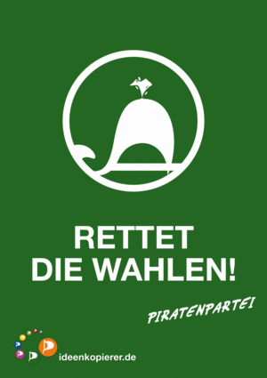
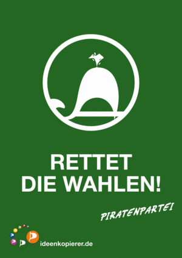

Unsere Werbung
Unsere Inhalte
Veranstaltungssuche
Mehr...


Wahlwerbung ist auch nur ganz normale Werbung. Es werden keine Inhalte vermittelt, politische Aussagen werden auf eingängige Slogans reduziert. Also machen wir Piraten diesmal auch Werbung. Wir werben dafür, über Politik wirklich mal nachzudenken und platte Werbeslogans zu hinterfragen.
Wir wollen, dass du, Einwohner unseres Bundeslandes, nicht irgendwelchen Plakaten vertraust – getreu dem Motto: „Denk selbst!“
Informier dich; lies die Wahlprogramme; vergleich sie!
Ja, wir wollen, dass Du auch die Programme der anderen Parteien anschaust Nur dann hast Du wirklich eine Wahl.
Und ganz wichtig: am 20. Januar wählen gehen!
Für unsere politische Aktivität benötigen wir neben sehr viel Überzeugung und Engagement leider auch Geld.
Anders als die "großen" Parteien machen wir uns nicht durch Sponsoring von Firmen abhängig.
Daher brauchen wir dich! Spende jetzt!
Die Spende per SMS ist am einfachsten. Sende einfach eine SMS mit dem Wort "PIRATEN" an die 81190, oder Klick auf "Jetzt Spenden" und dann auf "Senden"
Diese SMS kostet dich 5 € zuzüglich der normalen SMS-Versandkosten deines Mobilfunkanbieters,
die Abrechnung erfolgt Über deine Mobilfunkrechnung.
Pro SMS-Spende gehen 4,83 € direkt an die Piratenpartei Niedersachsen


 
Klarmachen zum Ändern!
Im Januar bringen die Piraten frischen Wind in den Landtag. Seit 2010 sind wir auch in Räten und Parlamenten vertreten. Die bisherige Politik in Niedersachsen hat sich verloren in Stallordnungen von Parteien und dem Machterhalt von Personen. Ohne Sicht auf das große Ganze wird immer wieder reformiert und widerrufen. Die etablierten Parteien verfolgen in Niedersachsen bisher nur kurz- und mittelfristige Politikansätze. Wir Piraten denken langfristig.
die Piraten werden niedersachsen positiv verändern:
• Politik soll sich um die Menschen sorgen, die sich eine lebenswerte Zukunft wünschen.
• Politik muss Rahmenbedingungen für eine Gesellschaft bieten, damit diese wächst.
• Politik darf sich nicht abkapseln, sondern muss alle Menschen integrieren.
Wir bringen Politik näher an den Menschen,
so wie es noch keine Partei bisher ermöglichen konnte.
Wir wollen wieder echte Demokratie. Uns Bürgern muss mehr Einfluss auf Politik und Verwaltung ermöglicht werden. Darum fordern wir ein Transparenzgesetz für Nieder- sachsen, das allen Bürgern die Informationen aus Politik und Verwaltung öffentlich zugänglich macht. Wirkliche Transparenz bedeutet für uns, dass die politische Ent- scheidungsfindung für jeden nachvollziehbar wird.
Behörden müssen mit jedem Bürger auf verständliche Weise kommunizieren und Vor- gänge in Verwaltungen müssen für alle durchschaubar sein. Unsere Forderung ist, dass das Niedersächsische Abgeordnetengesetz endlich an die Vorgaben der UN-Konvention zur Korruptionsbekämpfung angepasst wird. Nebeneinkünfte und Verflechtungen zwi- schen Politikern und Lobbygruppen müssen umfassend offengelegt werden. Wir verlan- gen, dass im Landtag wieder echte Debatten stattfinden und Entscheidungen nur dann getroffen werden, wenn der Landtag beschlussfähig ist.
Statt Lobbyismus setzen wir auf mehr Einfluss für die Bürger, indem wir die direkte De- mokratie stärken und Hürden für Volksbegehren und Volksabstimmungen abbauen. Ver- mehrt nehmen Bürger ihre Angelegenheiten selbst in die Hand. Wir Piraten sind für diese Menschen der Fuß in der Tür: Der parlamentarische Arm der neuen Bürgerbewegung für mehr Mitwirkung und gegen Bevormundung.
Im Januar br
Im Januar bringen die Piraten frischen Wind in den Landtag. Seit 2010 sind wir auch in Räten und Parlamenten vertreten. Die bisherige Politik in Niedersachsen hat sich verloren in Stallordnungen von Parteien und dem Machterhalt von Personen. Ohne Sicht auf das große Ganze wird immer wieder reformiert und widerrufen. Die etablierten Parteien verfolgen in Niedersachsen bisher nur kurz- und mittelfristige Politikansätze. Wir Piraten denken langfristig.
Wir, die PIRATEN Niedersachsen, fordern eine ökologische und an den Bedürfnissen der Menschen ausgerichtete Wirtschaftspolitik. Steuer- und Leistungsgerechtigkeit sind die Grundlagen unserer Finanzpolitik. Nur wenn sich jeder entsprechend seiner Leistungsfähigkeit an den gesamtstaatlichen und gesamtgesellschaftlichen Aufgaben beteiligt, kann das sozialstaatliche System überleben.
Die Finanzverwaltung muss sicherstellen, dass alle Bürger und Unternehmen ihren Anteil an der Steuerlast tragen. Eine gerechte und effiziente Steuererhebung und die Bekämpfung von Steuerhinterziehung erfordert, dass die Finanzämter über entsprechende personelle und sachliche Mittel verfügen.
Auch setzen wir uns für fairen Wettbewerb, für die Förderung von Innovationen sowie gegen privatwirtschaftliche Monopole und übermäßige staatliche Regulierung der Unternehmen ein.
Steuerlich entlasten wollen wir insbesondere kleine Betriebe, die Arbeits — und Ausbildungsplätze erhalten und neue schaffen.
Wir treten für ein einfaches und gerechtes Steuersystem ein.
Die Belastung durch Steuern muss sozial gerecht erfolgen. Bürger mit höherer wirtschaftlicher Leistungsfähigkeit müssen mehr zur Staatsfinanzierung beitragen als Bürger mit geringerer Leistungsfähigkeit. Die von den anderen Parteien über Jahrzehnte erfolgte Senkung der Spitzensteuersätze hat sich als Fehler erwiesen und ist Ursache einer stetig steigenden Kluft zwischen Reich und Arm. Wir wollen diese Entwicklung korrigieren. Steuergerechtigkeit bedeutet auch, dass alle Einkünfte und Vermögenszuwächse der Besteuerung unterliegen müssen.
Steuergesetze sollen möglichst einfach und verständlich formuliert werden. Dort wo komplizierte Regelungen rechtlich notwendig sind, müssen diese vom Staat durch zusätzliche Erläuterungen für den Steuerzahler verständlich gemacht werden. Sie als Bürger dürfen nicht auf Steuerberater angewiesen sein, um sicher zu stellen, dass sie nicht zu viele Steuern bezahlen.
Wir lehnen es ab, dass die Finanzverwaltungen Urteile des Bundesfinanzhofs häufig nicht über den Einzelfall hinaus anwenden und jeder Bürger sein Recht erneut einklagen muss. Wir wollen die Anzahl der Steuerarten verringern. Viele Steuern verursachen für Wirtschaft und Staat einen unverhältnismäßig hohen Aufwand. Hierbei ist insbesondere auf Ebene der Kommunen ein ausreichender Einnahmenausgleich sicherzustellen. Wir wollen eine Vereinfachung des Steuerrechts, keine pauschale Steuersenkung für einzelne Personen- oder Interessensgruppen.
Zusätzlich fordern wir, dass die Finanzämter sowohl personell als auch sachlich besser ausgestattet werden. Hierdurch soll nicht nur die Bearbeitungszeit von Steuererklärungen verkürzt werden, sondern insbesondere auch die Steuergerechtigkeit erhöht werden. Steuererklärungen großer Unternehmen müssen gründlicher überprüft werden, dazu gehören zeitnahe Betriebsprüfungen und eine umfassendere Nutzung der sogenannten digitalen Steuerprüfung. Die Zusammenarbeit der Länderfinanzverwaltungen muss verbessert werden. Die Finanzverwaltungen müssen in die Lage versetzt werden, Steuerhinterziehung konsequent zu bekämpfen.
Mit Share Deal [engl.] wird eine Gestaltung bezeichnet, bei der ein zu verkaufendes Grundstück zunächst in eine speziell dafür gegründete Gesellschaft eingelegt wird und anschließend zunächst 95 % der Gesellschaftsanteile (grunderwerbsteuerfrei) veräußert werden. Der Verkäufer behält formell 5 % der Anteile, hat aber regelmäßig keinerlei Mitspracherechte über das Grundstück. Erst wenn nach Ablauf steuerlicher Fristen diese 5 % übertragen werden, fällt anteilig für diese 5 % Grunderwerbsteuer an.
Dem Ziel eines transparenten Steuersystems dient auch unsere Forderung danach, missbräuchliche Vertragsgestaltungen nach dem so genannten Share-Deal-Modell abzuschaffen. Sie führen dazu, dass 95 % der eigentlich anfallenden Grunderwerbsteuer bei einem Grundstücksverkauf umgangen werden. Dies verursacht bei den Ländern hohe Steuerausfälle. Wir werden unseren Einfluss im Landtag geltend machen, damit das Land Niedersachsen über den Bundesrat notwendige Gesetzesinitiativen zur Schließung dieses Steuerschlupfloches ergreift.
Bund und Länder haben in den letzten Jahren immer mehr Belastungen auf die Kommunen abgewälzt. Zusammen mit einer falschen Steuerpolitik hat dies zu einer Überschuldung der niedersächsischen Kommunen beigetragen. Es ist absehbar, dass die meisten niedersächsischen Kommunen ihre Schulden aus eigener Kraft nicht mehr abbauen können. Wir setzen uns daher für die Schaffung einer gesetzlichen Grundlage zur Einführung eines geordneten Insolvenzverfahrens für Kommunen durch eine Bundesratsinitiative ein.
Durch einen konsequenten Schnitt auf der Gläubigerseite könnte die Handlungsfähigkeit der Kommunen wieder hergestellt werden. Es ist in Verhandlungen über die Abfindung der Gläubiger einzusteigen. Mehrheitlich sind diese bei Banken und Finanzinvestoren zu finden.
Durch die wiedergewonnene Handlungsfähigkeit der Kommunen würden gerade das Handwerk und der Mittelstand in der jeweiligen Region profitieren. Durch einen sanierten Haushalt könnten viele, bisher aufgeschobene, Investitionen durchgeführt werden.
Die Aufrechterhaltung einer grundlegenden Infrastruktur für Bildung, Gesundheit, Energieversorgung, Transport usw. ist Aufgabe des Staates. Eine weitere Privatisierung in diesen Bereichen sehen wir kritisch. Ziel muss es sein, dass Kommunen ihre Infrastruktur selbst finanzieren können. Genossenschaften von Bürgern, in der die Nutzer einer Infrastruktur diese selber betreiben, sehen wir als eine mögliche und sinnvolle Alternative zu einer weiteren Verschuldung der Kommunen. Da das Ziel der Genossenschaften nicht die Gewinnmaximierung sondern die Erfüllung der gewählten Funktion ist, arbeiten diese sozial verträglicher als gewinnorientierte Unternehmen.
Wir setzen uns für verantwortungsvolles, wirtschaftliches Handeln ein, und lehnen deswegen das Modell der Öffentlich Privaten Partnerschaften grundsätzlich ab. Diese lassen sich mit unserem Demokratieverständnis nicht vereinbaren. Verträge, die Bund, Länder und Kommunen mit Privatunternehmen schließen, müssen für die Volksvertreter, aber auch direkt von Ihnen als Bürger, kontrollierbar sein. Geheimverträge müssen deshalb vermieden werden. Der Schutz des Geschäftsgeheimnisses eines Privatunternehmens darf nicht über der staatlichen Pflicht zum nachvollziehbaren Handeln stehen. Es ist verlockend, statt einer einmaligen Investition, auf ein Leasingmodell zu setzen, bei dem der aktuelle Haushalt dank der deutlich kleineren, sofort fälligen Summe nicht blockiert wird. Dadurch werden jedoch zukünftige Haushalte auf Jahrzehnte belastet und es kommt zu einer versteckten Verschuldung, die nicht in der Bilanz auftaucht.
Soweit trotzdem zur Vermeidung von Kreditaufnahmen des Landes Aufgaben auf private Träger verlagert und durch Bürgschaften des Landes abgesichert werden, fordern wir deren transparente Offenlegung. Diese Bürgschaften belasten den Landeshaushalt erst dann mit Zahlungen, wenn das Land als Bürge in Anspruch genommen wird. Was vordergründig als Vorteil und sinnvoll erscheint, birgt tatsächlich gewaltige Risiken für künftige Haushalte und dient ausschließlich dem Zweck, Ausgaben aus dem Haushalt auszulagern, um diesen noch verfassungsgemäß zu halten.
Wir setzen uns dafür ein, dass alle vom Land gewährten Bürgschaften offengelegt und die enthaltenen Risiken regelmäßig vom Finanzausschuss des Landtages überprüft werden. Für erkannte hohe Risiken müssen Rücklagen gebildet werden, um zukünftige Generationen nicht zu belasten. Für den Bundeshaushalt soll durch Niedersachsen eine entsprechende Initiative über den Bundesrat eingebracht werden.
Insgesamt setzen wir uns dafür ein, dass die Haushalte transparenter werden und fordern deshalb die zeitnahe Einführung der Doppik (Doppelte Buchführung in Konten) auf niedersächsischer Landesebene. Bei der Umsetzung muss darauf geachtet werden, dass die Liegenschaften der Stadt mit ihrem tatsächlich realisierbaren Wert bewertet und keine angenommenen unrealistischen Werte als Grundlage für das Vermögen der Stadt zu Grunde gelegt werden. So können die Werte als Sicherheiten für zukünftige Kreditaufnahmen dienen und einer Überschuldung vorbeugen.
Wir treten dafür ein, dass Unternehmen sich freiwillig für oder gegen die Mitgliedschaft in einer Industrie- und Handels-, Landwirtschafts- oder Handwerkskammer entscheiden können. Pflichtmitgliedschaften erachten wir nur da für notwendig, wo die Kammern für eine wirksame Berufsaufsicht zuständig sind (z.B. Rechtsanwälte, Ärzte oder ähnlichen Berufsgruppen). Hier treten wir zusätzlich für eine bessere öffentliche und transparente Beaufsichtigung dieser Berufsgruppen ein. Wir werden entsprechende Änderungsinitiativen des Landes Niedersachsen über den Bundesrat beantragen.
Zur Liberalisierung in der Wirtschaftspolitik gehört für uns auch, dass wir eine umfassende Neuordnung des Glücksspielmarktes fordern. Wir streben eine bundeseinheitliche Regelung an, die sowohl den Anforderungen des europäischen Wettbewerbsrechts als auch dem Internetzeitalter gerecht wird.
Eine Neuordnung muss die Interessen aller Beteiligten berücksichtigen, die der öffentlichen Hand an Steuereinnamen, die der Anbieter, Spieler und betroffener Dritter an einer planungssicheren Rechtslage und die der Bevölkerung an effektiver Suchtprävention. Gerade hier besteht im aktuellen Entwurf noch Nachholbedarf. So müssen beim Aufbau der geplanten Sperrdatei für Glücksspielsüchtige Datenschutzbelange berücksichtigt werden. Darüber hinaus sind Netzsperren bei der Neuregelung auszuschließen.
Grundlage einer Neufassung des Glückspielrechts könnte das im September 2011 verabschiedete Glücksspielgesetz Schleswig-Holsteins bilden, das, im Gegensatz zu den aktuellen Entwürfen der übrigen 15 Länder, von der EU-Kommission ohne Einschränkungen akzeptiert wurde.
Geldwäsche in Spielhallen muss unterbunden werden. Regelmäßige Kontrollen sind flächendeckend durchzuführen, um Manipulationen zu verhindern.
Wir sind für die schnellstmögliche Einführung des Trennbanken- Systems für die Sparkassen und die Nord/LB in Niedersachsen. Durch die rechtliche Trennung der Banken in eine Geschäftsbank und in eine so genannte Investmentbank (Wertpapier-Handelsbank) wird verhindert, dass bei Wertpapiermarkt-Turbulenzen die Kundengelder für den Handel mit Wertpapieren haften und der eigentliche Geschäftsbetrieb einer Bank in Mitleidenschaft gezogen wird. Im schlimmsten Fall droht die Zahlungsunfähigkeit der Bank und der Totalverlust der Kundengelder, sowie die Einstellung des Zahlungsverkehrs und die Rückzahlung der Darlehen.
NordLB und Sparkassen werden angehalten, innerhalb von 2 Monaten eine Versammlung der Anteilseigner einzuberufen, um darüber zu entscheiden, ob sie als Geschäftsbank oder Investmentbank geführt werden wollen. Nach dieser Entscheidung hätten die Banken 9 Monate Zeit, um die Trennung zu vollenden. Kreuzbeteiligungen jeder Art müssen verboten sein. Jede systematische Umgehung führt zwangsläufig zur Aberkennung der Banklizenz als Geschäftsbank. Eine nachträgliche Umwandlung in eine Investmentbank ist möglich.
Investmentbanken sind nur als Partnerschaften zu führen. Die Eigentümer haften für ihr Handeln. Sie dürfen Filialen unterhalten, aber nicht über Sparkassen verfügen. Der Umgang mit Bargeld des Kunden ist nicht gestattet. Eigenhandel wird gestattet, sofern eine Finanztransaktionssteuer von 0,1 % entrichtet wird. Alle Derivate sind über registrierte Makler bzw. Börsen abzuwickeln.
Geschäftsbanken dürfen keine Geschäfte auf eigene Rechnung tätigen. Aktien dürfen im Namen und auf Rechnung von Kunden ge- und verkauft werden. Fonds dürfen nur vertrieben werden, wenn diese Produkte von der Bank selber erschaffen worden sind. Hypotheken und Darlehen dürfen nur weiterverkauft werden, wenn diese zwei Jahre lang ordnungsgemäß bedient worden sind.
Wir sind für eine Ausschüttung der Gewinne der in öffentlicher Hand befindlichen Sparkassen an die Kommunen. Der Gewinn sollte nach Abzug eines angemessenen Betrages zur Stärkung des Eigenkapitals und der Risikovorsorge an die Kommunen ausgezahlt werden. Über die Verwendung dieses Gewinns müssen die gewählten Volksvertreter entscheiden können.
Die im VW-Gesetz verankerten besonderen Stimmrechtsbeschränkungen befürworten wir. Für viele Bürger in Niedersachsen und für das Land insgesamt spielt der VW-Konzern eine herausragende wirtschaftliche und soziale Rolle. Auch wenn die besonderen Schutzrechte, die dieser Bedeutung gerecht werden, ebenfalls in der Satzung der VW AG mit 98% der Aktionärsstimmen verankert wurden, spiegeln die Regelungen des VW Gesetzes die Verantwortung der Wirtschaft für die Mitarbeiter von VW und den Menschen in Niedersachsen wieder. Diese Verantwortung darf nicht den alleinigen Interessen der Wirtschaft untergeordnet werden.
Wir unterstützen daher das Land Niedersachsen und die Bundesrepublik Deutschland in ihrer rechtlichen Wertung gegenüber der Kommission der Europäischen Union.
Die Wertung der Bundesregierung in Bezug auf den Stimmrechtanteil ist rechtlich zulässig. Auch ohne ein Gesetz hat eine Gesellschaft das Recht gemäß des Aktiengesetzes eine von 75 % abweichende Bestimmung festzulegen. Von diesem Recht haben die Aktionäre des VW-Konzerns Gebrauch gemacht.
Im Falle der Änderung nach den Wünschen der EU-Kommission besteht die Möglichkeit, dass die Arbeitnehmerrechte im VW-Konzern eingeschränkt werden. Dies stellt weiterhin eine Bedrohung der Arbeitsmarktstruktur in Niedersachsen dar, da indirekt die Standortgarantie für die im Land verteilten Produktionsstätten bedroht ist.
Ein Mensch kann nur in Würde leben, wenn er ein Recht auf Versorgung seiner Grundbedürfnisse und gesellschaftliche Teilhabe hat. Wir, die PIRATEN Niedersachsen, fordern deshalb eine an den Bedürfnissen der Menschen orientierte Arbeits- und Sozialpolitik.
Aktuell ist eine befriedigende Teilhabe der gesamten Bevölkerung am gesellschaftlichen Leben hauptsächlich nur durch Erwerbsarbeit möglich. Daher wurde und wird bis heute die Vollbeschäftigung angestrebt. Wirtschaftspolitisch sollte dies vor allem durch wirtschaftsfördernde Maßnahmen und durch staatlich finanzierte bzw. subventionierte Arbeitsplätze erreicht werden. Unserer Meinung nach ist eine Vollbeschäftigung aufgrund der immer schnelleren technischen Innovationen und der stetig voranschreitenden Automatisierung kaum noch zu erreichen.
Darum setzen wir Piraten uns für ein garantiertes Einkommen ein. Genauso wie die öffentliche Sicherheit, die Verkehrswege und weite Teile des Bildungssystems soll auch die Existenzsicherung ohne direkte Gegenleistung zur Verfügung gestellt werden. Daher stehen wir für Lösungen, die eine finanziell sichere Existenz und gesellschaftliche Teilhabe individuell und bedingungslos garantieren und dabei auch wirtschaftliche Freiheit erhalten und ermöglichen. Wir wollen die Armut verhindern, nicht den Reichtum.
Wir sind der Überzeugung, dass die überwältigende Mehrheit der Menschen eine sichere Existenz als Grundlage für die Entfaltung ihrer wirtschaftlichen und sozialen Entwicklungsmöglichkeiten nutzen wird. Eine sichere Existenz schafft Freiräume für selbstbestimmte Bildung und Forschung sowie wirtschaftliche Innovation. Sie erleichtert und ermöglicht ehrenamtliches Engagement, die Pflege von Angehörigen, die Fürsorge für Kinder, unabhängigen Journalismus, politische Aktivität und die Schaffung von Kunst und freier Software. Davon profitiert die gesamte Gesellschaft. Bis zur Einführung eines bedingungslosen Grundeinkommens setzen wir uns für einen bundesweiten gesetzlichen Mindestlohn ein. Wir fordern daher einen allgemein verbindlichen Mindestlohn, welcher der von der OECD ermittelten Niedriglohngrenze für Deutschland entspricht.
Die Organisation für wirtschaftliche Zusammenarbeit und Entwicklung (OECD) ermittelt für jedes ihrer 34 Mitgliedsländer ein mittleres Einkommen. Um dieses Einkommen zu erzielen, muss man den sogenannten Medianbruttolohn verdienen. Ein Arbeitnehmer verdient laut OECD einen Niedriglohn, wenn er nur zwei Drittel des Medianlohns oder weniger von seinem Arbeitgeber bekommt. Läge zum Beispiel der Medianbruttolohn bei 15 Euro, dann wären 10 Euro die Niedriglohngrenze. Diese Niedriglohngrenze liegt momentan bei 10,36 Euro brutto pro Stunde. Sie wird jedes Jahr neu berechnet.
Da alle Menschen unabhängig von ihrer Herkunft gleich sind, gilt dies auch für den Arbeitsmarkt. Jeder Arbeitnehmer soll einen vergleichbaren Lohn für vergleichbare Arbeit bekommen. Der Lohn soll sich ausschließlich an seiner Qualifikation orientieren und unabhängig von der Herkunft des Arbeitnehmers sein. Das Recht auf persönliche Lohnverhandlungen ist davon natürlich nicht betroffen.
Seit Inkrafttreten des Arbeitnehmerentsendegesetzes kommt es zu einem verstärkten Zustrom von insbesondere osteuropäischen Arbeitnehmern. Diese kennen ihre Rechte oftmals nicht. Deshalb fordern wir die Einrichtung von Beratungsstellen für ausländische Arbeitnehmer. Während in Berlin, Hamburg und Hessen bereits Beratungsstellen existieren und in Nordrhein-Westfalen und Bayern geplant sind, gibt es in Niedersachsen keine unabhängige rechtliche Beratung. Das niedersächsische Wirtschaftsministerium verweigert sich zudem einer Förderung.
Bei der Verbesserung der Arbeitssituation muss der öffentliche Dienst mit gutem Beispiel vorangehen.
Daher ist es unser Ziel in Niedersachsen, Zeitverträge im öffentlichen Dienst abzuschaffen bzw. vorhandene in unbefristete Arbeitsverträge umzuwandeln.
In der Agentur für Arbeit sowie in den Bereichen Gesundheitsversorgung und Soziales der öffentlichen Hand werden Mitarbeiter mit Zeitverträgen eingesetzt. Die in der freien Wirtschaft gängige Argumentation, Zeitverträge seien eine Voraussetzung, um flexibel auf die Wirtschaftslage reagieren zu können, kann für Kommunen, Land und Staat nicht gelten. Dem Staat sollte es möglich sein, eine mittel- bis langfristige Personalplanung zu realisieren, die den neu eingestellten Mitarbeitern eine Perspektive ohne Zeitverträge bietet und sie nicht erpressbar macht.
Auch Unternehmen, die sich um öffentliche Aufträge — z.B. von Kommunen oder Behörden des Landes — bewerben, müssen dem guten Beispiel folgen. Aus diesem Grund setzen wir uns für eine Reform des Landesvergabegesetzes ein. So müssen die sich bewerbenden Unternehmen sowie deren Subunternehmen ihren Arbeitnehmern mindestens einen Stundenlohn in Höhe der Niedriglohngrenze gemäß OECDDefinition zahlen. Beschäftigte Leiharbeiter müssen den gleichen Lohn wie die Stammarbeitskräfte erhalten. Zudem sollen bei öffentlichen Ausschreibungen für Beschaffungen und Aufträge noch festzulegende Mindeststandards für Umwelt- und Energieeffizienzkriterien eingehalten werden.
Neben der arbeitspolitischen Perspektive setzen wir uns ebenfalls für eine Sozialpolitik ein, die sich der gesellschaftlichen Probleme bewusst ist und diesen entgegenwirkt.
Deshalb lehnen wir auch den stetigen Rückzug des Landes aus der Jugendarbeit ab. Alle Vereine, die Jugendarbeit leisten, sowie alle Jugendhäuser sind zu erhalten und zu unterstützen. Jugendhäuser sind wichtige gesellschaftliche Begegnungsstätten. Wie die Sport- und Musikvereine fördern sie den kulturellen Austausch, vermindern sprachliche und kulturelle Barrieren und erleichtern unser aller Zusammenleben. Zur Förderung der Bildung von Kindern und Jugendlichen setzen wir uns darüber hinaus für den Erhalt und Ausbau kostenfreier Büchereien ein. Das Land Niedersachsen muss sich für eine bessere Finanzsituation der Gemeinden einsetzen, damit Einrichtungen der Jugendförderung kommunal gefördert werden können.
Gewalt betrachten wir als ein gesamtgesellschaftliches Problem, das nicht durch reflexartige, einfache Schuldzuweisungen unter den Teppich gekehrt werden darf. Darum lehnen wir es ab, Menschen zu stigmatisieren, die ihre Freizeit mit Computerspielen, dem Paintballsport oder vergleichbaren Aktivitäten verbringen.
Stattdessen wollen wir den verantwortungsbewussten Umgang mit solchen spielerischen Freizeitaktivitäten fördern und Maßnahmen zur Konfliktlösung und Gewaltprävention ausbauen. Pädagogisch-psychologische Fachkräfte sollen flächendeckend in Schulen, Beratungsstellen und Jugendzentren sowie in der Erwachsenenbildung tätig werden.
Ein weiteres ernstzunehmendes gesellschaftliches Problem, welches viele Menschen und gerade Kinder und Jugendliche betrifft, stellt in unseren Augen das Internetmobbing dar. Das 21. Jahrhundert bietet durch das Internet und weitere technische Errungenschaften viele neue Möglichkeiten zur schnelleren und unkomplizierten zwischenmenschlichen Kommunikation. Trotz aller Vorteile, die das Internet bietet, sollen seine Nachteile jedoch nicht übersehen werden. Deshalb setzen wir uns auch speziell gegen diese Form des Mobbings ein. Durch enge Zusammenarbeit mit zuständigen Stellen und aktive Mitarbeit an Aufklärungsprojekten tragen wir unseren Teil zur Prävention von Internetmobbing bei. Mobbing darf nicht zum Hindernis für den wünschenswerten Umgang mit dem Internet werden.
Ebenfalls ein wichtiges Ziel unserer Sozialpolitik ist die konsequente Umsetzung des Inklusionsgedankens der UN-Behindertenrechtskonvention. Dabei stellt die UNKonvention für Menschen mit Behinderungen den rechtlichen Rahmen für eine Gesellschaft dar, an der jeder nach seinen Möglichkeiten gleichberechtigt teilnehmen kann. Dies bedeutet aus unserer Sicht eine Herausforderung für alle staatlichen Institutionen und für die Zivilgesellschaft und erfordert politisches Handeln und landesweite Strategien.
Ein wichtiger Aspekt ist es, die Mobilität von Behinderten zu verbessern. Deshalb setzen wir uns dafür ein, dass die gesetzlichen Richtlinien angepasst werden und insbesondere im öffentlichen Personennahverkehr, in Ämtern und Behörden sowie in Bildungseinrichtungen die Barrierefreiheit massiv ausgebaut wird. Um dies zu unterstützen, muss barrierefreies Bauen ein fester Bestandteil der Architektenausbildung werden.
Auch die Eingliederung ins Berufsleben ist ein wichtiger Schritt in Richtung Inklusion. Aus diesem Grund kritisieren wir, dass Unternehmen sich aus der Pflicht „freikaufen“ können, Menschen mit Behinderungen eine Anstellung zu ermöglichen. Der Druck auf niedersächsische Unternehmer, mehr Menschen mit Behinderungen zu beschäftigen und Arbeitsplätze entsprechend zu gestalten, muss wachsen. Dabei darf kein weiterer Niedriglohnsektor entstehen. Menschen mit Behinderungen sollen in regulärer, tariflich gebundener Erwerbsarbeit ihren Platz finden.
Um Betroffenen mehr Mitsprachemöglichkeiten zu geben, setzen wir uns dafür ein, dass Behindertenbeiräte ein Vetorecht erhalten und von den Betroffenen demokratisch gewählt statt wie bisher eingesetzt werden. Zusätzlich sollen die Beteiligungsmöglichkeiten von Menschen mit Behinderungen auf kommunaler und Landesebene ausgebaut werden, indem weitere Selbsthilfegruppen und Verbände gefördert werden.
Insgesamt muss Inklusion in Niedersachsen selbstverständlich werden, weshalb wir uns für landesweite Foren einsetzen. Dort sollen alle Beteiligten der Inklusion vertreten sein, um einen gesellschaftlichen Veränderungsprozess in Gang zu bringen.
Auch kann es nicht sein, dass behinderte Menschen kein Vermögen besitzen dürfen bzw. kein Recht auf ein Einkommen von über 1400 € haben, wenn sie Eingliederungshilfen oder eine persönliche Assistenz erhalten möchten. Deshalb werden wir uns für eine Bundesratsinitiative einsetzen, die diesen Missstand abzuschafft.
Durch die wirtschaftliche Entwicklung, den demografischen Wandel und die Besiedlung in einem Flächenland ergeben sich für den Verkehr in Niedersachsen besondere Herausforderungen. Diese können wir, die PIRATEN Niedersachsen, nur durch die Zusammenarbeit mit allen Beteiligten bewältigen.
Zu einer nachhaltigen Verkehrspolitik gehört unter anderem der Ausbau klimafreundlicher Verkehrsangebote und die Schaffung städtischer und ländlicher, vor allem flächendeckender Verkehrsinfrastrukturen. Die optimale Ausnutzung bestehender Trassen für Bahn- und Straßenverkehr ist dabei Neubauten vorzuziehen. Aber auch die Wohnraumpolitik ist eine wichtige Infrastrukturaufgabe für Niedersachsen.
Wir unterstützen Bemühungen, das Recht auf angemessenen Wohnraum als Grundrecht in der niedersächsischen Landesverfassung und im Grundgesetz zu verankern. Wir sehen den Staat in der Pflicht, geeignete Rahmenbedingungen zu schaffen, um jedem Bürger einen ausreichenden und bezahlbaren Wohnraum zur Verfügung zu stellen. Wir setzen uns deshalb dafür ein, dass das Land Niedersachsen und die Kommunen über eigene Wohnungsbaumaßnahmen ausreichend Wohnraum für alle schaffen.
Die Verdrängung von Mietern durch Spekulanten sehen wir als Verstoß gegen die im Grundgesetz festgelegte Allgemeinwohlverpflichtung von Eigentum an. Dennoch unterstützen wir aber auch die wichtige Rolle der Privatinvestoren bei der Schaffung von Wohnräumen.
Dazu gehört, dass wir im Baurecht feste Grenzen fordern, nach denen Bebauungspläne die Gestaltungsfreiheit der Bauherren einschränken dürfen. Abgesehen von Sicherheitsaspekten soll es nur wenige zulässige Einschränkungen geben, wie beispielsweise bestimmte Mindestabstände zu Nachbargrundstücken und eine Obergrenze für die Bauhöhe. Vorgaben der Bebauungspläne erschweren bzw. verhindern teilweise den Bau von Niedrig- und Nullenergiehäusern, insbesondere wenn diese von der traditionellen Bauform abweichen. Auch andere Vorschriften, beispielsweise zur Hausund Dachfarbe, sind für uns nicht nachvollziehbar.
Ebenso wie die Versorgung mit preiswertem Wohnraum ist die Mitgliedschaft in einer Wohnungsgenossenschaft bzw. in einem Wohngemeinschaftsprojekt finanziell zu fördern. Die Förderungsrichtlinien müssen so flexibel gestaltet werden, dass sie unabhängig vom gewählten Lebensmodell, vom Alter oder von der Zusammensetzung einer Wohngemeinschaft wirken. Insbesondere treten wir für generationsübergreifende Wohnmodelle ein. Des Weiteren setzen wir uns für ein Vorverkaufsrecht von Mietergemeinschaften beim Erwerb der von ihnen bewohnten Immobilien ein.
Neuer Wohnraum könnte z. B. auf so genannten Konversionsflächen geschaffen werden. Durch die Umstrukturierung der Bundeswehr und den Abzug der britischen Streitkräfte werden große Flächen frei. Diese Flächen sollen nicht mehr höchstbietend verkauft werden. Vielmehr sollten die Kommunen diese Konversionsflächen als Grundstücksflächen gesellschaftlich sinnvoll nutzen.
Denn öffentlicher Grund und Boden muss vorrangig der gesamten Bevölkerung zugute kommen. Niedersachsen muss sich dafür beim Bund einsetzen und eine nachhaltige Umnutzung fördern. Die ortsnahen Flächen können den Kommunen die Stadtplanung erleichtern. Die vorhandenen Gebäude können nachhaltig und sinnvoll genutzt werden, sei es für Wohnraum, Verwaltung oder andere kommunale Zwecke. Ortsferne Flächen, zum Beispiel Truppenübungsplätze, sollen der Natur erhalten bleiben bzw. renaturiert werden.
Neben der Förderung von neuem Wohnraum ist die Mobilität von Menschen mit Behinderungen ein wichtiger Aspekt im Bereich Bauen und Verkehr. Deshalb setzen wir uns dafür ein, dass die gesetzlichen Richtlinien angepasst werden und insbesondere im öffentlichen Personennahverkehr, in Ämtern und Behörden sowie in Bildungseinrichtungen die Barrierefreiheit massiv ausgebaut wird. Um dies zu unterstützen, muss barrierefreies Bauen ein fester Bestandteil der Architektenausbildung werden.
Um die Mobilität aller zu verbessern, setzen wir uns für einen fahrscheinlosen öffentlichen Personennahverkehr mit Taktfahrplan und flexible Lösungen wie Rufbusse und Ähnliches ein. Vergleichbare Projekte anderer Städte zeigen die positiven Auswirkungen dieser Maßnahme auf Lebensqualität und Stadtentwicklung.
Dazu sollen Städte und Gemeinden gefördert werden, die eine Pilotphase zu entsprechenden Projekten durchführen. Diese sollen wissenschaftlich begleitet werden, um neue Erkenntnisse in die Verbesserung der Effektivität des Nahverkehrs einfließen zu lassen.
Das Land stellt für die Kommune, die dieses Projekt am besten umsetzt, eine Förderung von bis zu fünf Mio. Euro pro Jahr für fünf Jahre zur Verfügung. Sollte die geförderte Stadt/Gemeinde innerhalb von fünf Jahren nach dem Förderungsende wieder kostenpflichtige Fahrscheine einführen, sind die Fördermittel zurückzuzahlen.
Wir, die PIRATEN Niedersachsen, stehen für eine zeitgemäße Geschlechter und Familienpolitik. Diese basiert auf dem Prinzip der freien Selbstbestimmung über Angelegenheiten des persönlichen Lebens. Wir setzen uns dafür ein, dass die Politik den vielfältigen Lebensstilen gerecht wird. Jeder Mensch muss sich frei für den selbstgewählten Lebensentwurf und die von ihm gewünschte Form gleichberechtigten Zusammenlebens entscheiden können. Das Zusammenleben von Menschen darf nicht auf der Bevorzugung oder Benachteiligung Einzelner gründen.
Wir stehen daher für eine Politik, die die freie Selbstbestimmung von geschlechtlicher und sexueller Identität und Orientierung respektiert und fördert. Fremdbestimmte Zuordnungen zu einem Geschlecht oder zu Geschlechterrollen lehnen wir ab. Daher wollen wir geschlechtszuweisende Operationen bei Kindern (sofern diese sich nicht selbst dafür entschieden haben) ebenso abschaffen, wie den Zwang zum geschlechtseindeutigen Vornamen. Diskriminierung aufgrund des Geschlechts, der Geschlechterrolle, der sexuellen Identität oder Orientierung ist Unrecht, weshalb wir auch die Erfassung des Merkmals „Geschlecht“ durch staatliche Behörden ablehnen.
In vielen Ländern der Welt werden Menschen aufgrund ihrer geschlechtlichen oder sexuellen Identität bzw. Orientierung diskriminiert oder kriminalisiert. Diese Nachstellungen, gleich ob sie staatlich gelenkt oder nur geduldet sind, müssen als Asylgrund anerkannt werden.
Abweichende geschlechtliche oder sexuelle Identität bzw. Orientierung darf nicht als Krankheit oder Perversion eingestuft werden.
Wir setzen uns zudem für die Übernahme der auf Niedersachsen anzupassenden Initiative „Berlin tritt ein für Selbstbestimmung und Akzeptanz sexueller Vielfalt 2.0“ (ISV 2.0)“ als grundlegende Handlungsanweisung für die Bekämpfung von Homophobie in Niedersachsen ein.
Wir bekennen uns zum Pluralismus des Zusammenlebens. Politik muss der Vielfalt der Lebensstile gerecht werden und echte Entscheidungsfreiheit für die individuell gewünschte Form des Zusammenlebens ermöglichen. Eine bloß historisch gewachsene, strukturelle und finanzielle Bevorzugung ausgewählter Modelle im Steuerrecht oder Erbrecht — wie zum Beispiel durch das Ehegattensplitting — lehnen wir ab.
Steuerliche Vergünstigungen für Einzelpersonen oder Lebensgemeinschaften müssen an die Versorgung von Kindern und hilfsbedürftigen Menschen gebunden werden.
Ehe und eingetragene Partnerschaft sollen gleichgestellt werden. Dabei ist die eingetragene Partnerschaft für alle Formen der Partnerschaft zu öffnen. Wir wollen die eingetragenen Lebenspartnerschaft zu einer eingetragenen Lebensgemeinschaft auch von mehr als zwei Personen erweitern und entsprechende Konzepte erarbeiten und verwirklichen. Die eingetragene Lebenspartnerschaft ist als ziviler Solidarpakt zu gestalten. Dies soll eine flexiblere Übertragung von Rechten ermöglichen und vereinfachte und kostengünstigere Auflösungsverfahren (z. B. Scheidung) sowie die Verlagerung des Vertragsschlusses von der staatlichen auf eine notarielle Ebene erlauben.
Unabhängig vom gewählten Lebensmodell brauchen Lebensgemeinschaften, in denen Kinder aufwachsen oder hilfsbedürftige Menschen versorgt werden, einen besonderen Schutz. Kinder zu haben, darf nicht zu Diskriminierung oder Benachteiligung führen. Aus der geschlechtlichen oder sexuellen Identität bzw. Orientierung darf sich weder ein Vorrecht noch eine Verpflichtung zu einer höheren oder geringeren Einbindung in die Kinderversorgung ergeben. Wir setzen uns dafür ein, noch bestehende, gesellschaftliche Erwartungshaltungen abzubauen, und eine tatsächlich freie, individuelle Entscheidung zu ermöglichen.
Auch gleichgeschlechtliche Lebensgemeinschaften sollen zusammen Kinder bekommen, adoptieren und aufziehen dürfen. Allen Eltern, egal ob verheiratet oder nicht, steht gemäß Art. 6 unseres Grundgesetzes die elterliche Sorge für ihr Kind zu. Jedoch steht der sogenannte „Sorgerechtsparagraph“ dazu im Widerspruch. Demnach besteht gemeinsames Sorgerecht automatisch nur dann, wenn beide Elternteile verheiratet sind. Nicht verheiratete Eltern müssen sich aktuell diesbezüglich einig sein und eine Sorgeerklärung abgeben, ansonsten verbleibt die elterliche Sorge bei der Mutter.
Wir fordern die Gleichbehandlung nicht ehelicher und ehelicher Kinder sowie ein allgemeines gemeinsames Sorgerecht beider Elternteile ab Geburt eines Kindes.
Nicht verheirateten Vätern soll grundsätzlich mit der rechtlichen Anerkennung ihrer Vaterschaft die Inhaberschaft der elterlichen Sorge von Amts wegen beurkundet werden. Explizit ausgenommen sind Fälle, in denen es erst durch eine Straftat zur Schwangerschaft kam. In diesem Fall sollte weiterhin eine gemeinsame Sorgerechtserklärung oder ein Beschluss des Familiengerichts bindend sein.
Wer für einen selbstbestimmten Lebensentwurf von Familien einsteht, darf keine Betreuungsform bevorzugen oder benachteiligen. Wir wollen alle Betreuungsformen gleich behandeln, sei es die Betreuung durch eine staatliche Kindertagesstätte, einen Kinderladen, Tagesmütter (oder -väter) oder durch die eigenen Eltern. Wir glauben, dass die Mehrheit der Eltern selbst am ehesten in der Lage ist, solche Fragen zum Wohl ihrer Kinder zu entscheiden.
Das einseitige Subventionieren einzelner Betreuungsformen lehnen wir daher ab. Stattdessen wollen wir uns dafür einsetzen, dass perspektivisch jede Betreuungsform gleichberechtigt allen Eltern finanziell möglich ist, faktisch zur Verfügung steht und die Fremdbetreuenden ein gutes pflegerisches und erzieherisches Angebot unterbreiten können.
Wir beobachten in Niedersachsen in vielen Gemeinden eine weitaus höhere Nachfrage nach Betreuungsplätzen in allen Altersgruppen. Wir sehen daher die Landesregierung Niedersachsens in der Pflicht, die Kommunen beim Bau und der Ausstattung derartiger Einrichtungen finanziell zu unterstützen, sowie sich gegenüber dem Bund und der Europäischen Union für praxisgerechte Regelungen für Tagesmütter und -väter einzusetzen.
Das geplante Betreuungsgeld halten wir für ungeeignet, die Selbstbestimmung der Familien zu erhöhen und sehen in ihm eine absurde Subvention für die Nicht-Inanspruchnahme staatlicher Angebote.
Davon unberührt wollen wir auf Bundesebene die Besteuerung von Familien reformieren und das Recht auf sichere Existenz und gesellschaftliche Teilhabe für alle Familienmitglieder realisieren. Beides ermöglicht die Betreuung durch die Eltern.
Den stetigen Rückzug des Landes aus der Finanzierung der Jugendarbeit lehnen wir ab. Wir setzen uns für den Erhalt und die Unterstützung aller Vereine und Jugendhäuser ein, da diese wichtige gesellschaftliche Begegnungsstätten sind. Kultureller Austausch durch Sport- und Musikvereine sowie Jugendhäuser minimiert sprachliche und kulturelle Barrieren und erleichtert das Zusammenleben. Zur Förderung der Bildung von Kindern und Jugendlichen setzen wir uns darüber hinaus für den Erhalt und Ausbau kostenfreier Büchereien ein.
Wir, die PIRATEN Niedersachsen, stellen fest, dass die deutsche Drogenpolitik seit 40 Jahren fast ausschließlich auf Verbot und Strafverfolgung setzt und sich an das unrealistische Ziel einer drogenfreien Gesellschaft klammert. Einige Stoffe bleiben verboten, obwohl sie in Studien als wenig suchtund gesundheitsgefährdend eingestuft werden. Zugleich werden nachweislich gefährliche Substanzen wie Alkohol und Tabak in der Gesellschaft akzeptiert, ebenso Pharmaprodukte mit hohen Suchtpotential.
Der Gesetzgeber hält an Gesetzen fest, die weder Jugendliche noch Erwachsene wirkungsvoll schützen und die nicht die tatsächliche Gefährlichkeit berücksichtigen; Gesetze, die Polizei und Gerichte überlasten, sowie uns Bürger Jahr für Jahr Milliarden an wirkungslos verschwendeten Steuergeldern kosten.
Wir, die PIRATEN Niedersachsen, stehen für eine repressionsfreie Drogenpolitik und wollen ein Ende der gescheiterten Verbote. Wir lehnen die heutige, wissenschaftlich nicht haltbare Unterscheidung in legale und illegale Stoffe ab. Stattdessen fordern wir die objektive Bewertung und Handhabung aller psychoaktiven Substanzen alleine aufgrund ihres Gefahrenpotentials. Die Bevormundung Erwachsener beim verantwortungsvollen Umgang mit Rausch- und Genussmitteln widerspricht unserer Grundüberzeugung und unserem Verständnis einer mündigen Gesellschaft. Die Konsumenten dürfen nicht mehr wie bisher kriminalisiert werden. Der damit verbundene Schwarzhandel muss durch kontrollierte Erwerbsstrukturen ersetzt werden. So ergeben sich Rahmenbedingungen, die viele Probleme beseitigen, die alleine durch gefährliche Beimischungen und mangelnde Hygiene entstehen.
Prävention (Vorbeugung) muss ehrlich und sachlich sein, um nachhaltig überzeugen zu können. Damit wir für eine neue Drogenpolitik die notwendigen neuen Regelungen finden können, müssen alle Beteiligten und Betroffenen an den Überlegungen beteiligt werden. Nur dann können wir gemeinsam neue Konzepte gestalten, die ideologiefrei und realitätsorientiert die richtigen Schritte in Richtung Zukunft gehen. Gesetze, Verordnungen und Abgaberegelungen dürfen nur noch zum Schutz vor tatsächlichen Gefahren erlassen werden, nicht aufgrund ideologischer oder wirtschaftlicher Argumente. Ein barrierefreier und unzensierter Zugriff auf alle Informationen zu jeglichen Drogen ist jedem Bürger zu gewährleisten.
Die heutigen Maßnahmen zur Drogenprävention an Schulen sind aus unserer Sicht unzulänglich. Auch der Wissensstand des lehrenden Personals erweist sich oft als unzureichend. Einzelne Pilotprojekte haben gezeigt, wie wichtig und nachhaltig eine gute Prävention bereits im Grundschulalter ist. Jedweder Erstgebrauch, ob bei legalen oder illegalen Substanzen, nahm in den teilnehmenden Gruppen gegenüber den Vergleichsgruppen deutlich ab. Ihre erzielten Erkenntnisse und Erfolge tragen die Kinder wie selbstverständlich in die weiterführenden Schulen und ihre Freundeskreise. So wird für eine Multiplikation gesorgt, die Unterricht alleine kaum leisten kann.
Wichtig wird hierbei nicht nur ein einheitliches und sachliches Lehrmaterial sein, auch dass das Lehrpersonal umfassend und gründlich geschult wird, ist wichtig. Nur so wird an Bildungseinrichtungen ein kompetenter Unterricht ermöglicht. Auch externe Fachreferenten sollen hinzugezogen werden, um insbesondere in der Sekundarstufe das Wissen bei Lehrern und Schülern zu vertiefen. Grundgedanke und Ziel ist es, vorhandene Vorurteile gegen wissensbasierte Fakten auszutauschen.
Ein erfolgreiches Beispielprojekt für die Alkoholprävention existiert bereits in der Initiative „HaLt — Hart am Limit“, dessen landesweite Einführung wir in Niedersachsen vorantreiben werden. Die Einsparungen an langfristig suchtbedingten Folgekosten decken die Kosten für den flächendeckenden Aufbau von HaLt-Standorten.
„Hart am Limit“ ist ein Suchtpräventionsprojekt, das aus zwei unterschiedlichen Bausteinen besteht, die sich gegenseitig ergänzen und verstärken. Zum einen besteht es aus einer kommunal verankerten Präventionsstrategie, mit dem Ziel, Alkoholexzesse und schädlichen Alkoholkonsum im Vorfeld zu verhindern. Im zweiten, reaktiven Baustein setzen sich Jugendliche nach einer stationär behandelten Alkoholvergiftung in verschiedenen Maßnahmen mit ihrem riskanten Konsumverhalten auseinander.
Die Cannabispflanze enthält eine Reihe von Wirkstoffen, die ein hohes Potenzial für die medizinische Nutzung haben. Es gibt ungefähr 60 verschiedene dieser Wirkstoffe, sogenannte Cannabinoide, und alle weisen ein unterschiedliches Wirkungsprofil auf.
Diese Substanzen bieten Linderung bei vielen schwerwiegenden Leiden und Krankheiten, wie beispielsweise Krebs, HIV, Tourette, Epilepsie, Rheuma, Arthritis, Multiple Sklerose oder in der Schmerztherapie. Für diese Krankheiten kennt die moderne Medizin keine abschließenden Behandlungsmöglichkeiten. Darum ist international bereits ein deutlicher Trend zu verzeichnen, Cannabis nicht nur als Genussdroge, sondern auch als Heilpflanze zu betrachten. Leider wird in Deutschland jede sachorientierte Herangehensweise in diese Richtung bislang verweigert.
Wir fordern ein Umdenken. Patienten, die auf die medizinische Nutzung von Cannabis angewiesen sind, soll der Zugang wie zu jeder anderen Arznei aus diesem Bereich ermöglicht werden. Außerdem werden so die Hürden aus dem Weg geräumt, die eine zukunftsweisende Forschung in diesem Bereich verhindern.
Aber nicht nur die medizinische Verwendung von Cannabis muss aktualisiert werden. In Niedersachsen konsumieren über eine Viertelmillion Menschen zumindest gelegentlich Cannabis als Genussmittel. Cannabis ist damit als Volksdroge in der Mitte der Gesellschaft angekommen. Alle bisherigen Versuche, den Schwarzmarkt einzudämmen, führten zu immer weiteren Einschränkungen der Grundrechte: Tausende Abhörmaßnahmen werden gegen vermeintliche Drogendealer angeordnet. Daraus erwachsen aber regelmäßig auch Verfahren gegen einfache Konsumenten.
Durch lange aufbewahrte, sogenannte „taktische Hinweise“ der Polizei entsteht faktisch eine zentrale „Kifferdatei“, die zum Teil nur auf Vermutungen basiert. Die Einstufung von Bahnhöfen und Parks als „gefährliche Orte“ ermöglicht verdachtsunabhängige Personenkontrollen. Da die Rechtsprechung undurchsichtig ist, werden Besitzer von Kleinstmengen ersatzweise von den Führerscheinbehörden schikaniert. Wir fordern, dass sich die Politik endlich ihrer Verantwortung stellt und den Schwarzmarkt beseitigt. Das aufgrund der Verbotspolitik entstandene kriminelle Milieu muss nachhaltig ausgetrocknet werden. Herstellung, Verkauf und Konsum von Hanfprodukten muss entkriminalisiert und den Mechanismen des Jugend- und Verbraucherschutzes unterworfen werden. Schimmelpilz und gesundheitsgefährdende Beimengungen von Streckmitteln wie Vogelsand, Backmischungen, Haarspray, Dünger, synthetische Stoffe oder Blei müssen verhindert werden.
Die vorliegenden Erfahrungen mit der Entkriminalisierung von Cannabis in Portugal, den Niederlanden und Tschechien legen nahe, dass dann langfristig auch in Deutschland die Konsumentenzahlen zurückgehen werden.
Auch der Heroinkonsum wurde in der Vergangenheit weitgehend ideologisch und dogmatisch diskutiert. Eine sachorientierte Auseinandersetzung mit dem Problem fand nicht statt.
Bestenfalls wurden Schwerstabhängige mit Ersatzstoffen behandelt, um sie zur Abstinenz zu führen. Wer keinen Therapieplatz erhielt, beim Beikonsum erwischt wurde oder wegen der fehlenden Rauschwirkung der Ersatzstoffe in der psychischen Abhängigkeit verblieb, wurde in die Kriminalität gedrängt und in der Folge Opfer von Verelendung und gesellschaftlicher Ächtung. Auch Suchtkranke verdienen es jedoch, mit den besten zur Verfügung stehenden Medikamenten und Therapien behandelt zu werden.
Durch erfolgreiche Pilotprojekte z. B. in Hannover und Hamburg konnten der sinnvolle Einsatz von reinem künstlichen Diamorphins nachgewiesen werden. Dank kontrollierter Abgabe und Konsum des Diamorphins gelang es, Schwerstabhängige zu stabilisieren. Bei Einigen reduzierte sich der Bedarf, andere wurden sogar dauerhaft abstinent. Bei allen Teilnehmern zeigten sich erhebliche Verbesserungen. Hatte sich ihr Leben vorher ausschließlich um Beschaffungskriminalität und das Besorgen der nächsten Dosis gedreht, gewannen sie nun ihre Selbstbestimmung zurück und fanden neuen Lebensmut. In der frei gewordenen Zeit fanden viele Wohnung und Arbeit und begannen wieder am gesellschaftlichen Leben teilzunehmen. Der körperliche Zustand der Konsumenten verbesserte sich grundlegend. Die durch gefährliche Beimischungen (Talkum, Paracetamol, Glasstaub, Strychnin, Psychopharmaka, usw.) und Verschmutzung durch Keime und Bakterien im „Straßenheroin“ entstandenen gesundheitlichen Probleme traten nicht mehr auf. Infektionen wie zum Beispiel mit Hepatitis-C und HIV wurden verhindert.
Auf Basis dieser Erfahrungen muss kontrolliert verabreichtes Diamorphin als Medikament im Rahmen einer wirksamen Therapie betrachtet und als weiterer Baustein in der Behandlung Suchtkranker etabliert werden.
Wir fordern daher eine Ausweitung des Diamorphin-Programmes. Das Land soll die Einrichtung entsprechend gesicherter Arztpraxen und Ambulanzen unterstützen.
Die informationelle Selbstbestimmung ist auch im Bereich der Drogenpolitik zu gewährleisten, d. h. jeder Einzelne entscheidet selbst, welche persönlichen Daten er freigibt. Besonders große Unternehmen und Konzerne führen immer häufiger Einstellungstests durch, bei denen eine medizinische Untersuchung auf Drogenkonsum stattfindet. Diese Tests werden den Bewerbern, die sich hierzu schriftlich einverstanden erklären müssen, indirekt aufgezwungen. Bei Verweigerung der Tests haben die Bewerber keine Chance, die Arbeitsstelle zu bekommen. Interessanterweise wird in diesen Tests Alkoholmissbrauch nicht überprüft, obwohl dieser nachweislich für große Probleme im Arbeitsleben sorgt.
Wir wenden uns strikt gegen die Praxis vieler Unternehmen, Drogentests zum Standard bei Einstellungsverfahren zu machen. Diese gesetzliche Grauzone muss endlich geregelt werden. Den Arbeitgebern müssen diese Tests untersagt werden, sofern es sich dabei nicht um sensible Arbeitsbereiche handelt.
Hierbei soll Niedersachsen ein Vorreiter sein. Damit sollen auch bundesweit die Bestrebungen großer Unternehmen gestoppt werden, ihre Mitarbeiter völlig zu durchleuchten.
Mitarbeitern einiger Behörden ist es auch ohne jede fachliche Qualifikation erlaubt, reine Vermutungen über einen möglichen Drogenkonsum in persönliche Akten einzutragen. Derartige Einträge werden in der Folge nicht mehr hinterfragt und können so zu ungerechtfertigten Hürden für die Betroffenen werden. Diese Praxis muss unterbunden werden.
Auch im Rahmen von Ermittlungen des Landeskriminalamtes kommt es immer wieder dazu, dass Leute unschuldig des Konsums, Besitzes oder Verkaufs von illegalen Drogen verdächtigt werden. Eine erkennungsdienstliche Behandlung findet hierbei oft in rechtlich fragwürdigem Rahmen statt. Die so festgestellten, sehr persönlichen Daten müssen nach ergebnislos gebliebenen Ermittlungen umgehend wieder gelöscht werden. Dies wird heute nicht so praktiziert. Vielmehr sind Betroffene gezwungen, mittels selbst bezahltem rechtlichem Beistand eine solche Löschung durchzusetzen. Wir fordern die Löschung personenbezogener Daten, falls sich ein Verdacht nicht bestätigt. Eine weitere Verwendung der Daten und die Weitergabe sollen auf jeden Fall unterbleiben.
In staatlichen Hilfsprogrammen, zum Beispiel bei der Methadon- Substitution, müssen teilnehmende Personen ihren behandelnden Arzt von seiner Schweigepflicht entbinden, um die Krankenkassenleistung bekommen zu können. Diese entwürdigende Anforderung ist aufzuheben. Drogenkranke Menschen sind, wie alle anderen Bürger auch, als Patienten zu behandeln.
Viele Menschen in Deutschland verwenden heute die E-Zigarette als Genussmittel. Die dafür verwendeten Flüssigkeiten, Liquids genannt, bestehen aus einer flüssigen Trägersubstanz mit Aromen und können zusätzlich Nikotin enthalten. Bei der Verdampfung des Liquids in der E-Zigarette entsteht kein Rauch und nach dem derzeitigem Stand der Untersuchungen werden auch keine anderen Dämpfe frei, die für Dritte schädlich sein könnten.
Wir fordern Qualitätsstandards festzulegen, die als Grundlage für Produktion, Vertrieb und Handel von E-Zigaretten und die Liquids dienen sollen. Diese Standards sollen z.B. gelten für die verpflichtete Angabe der Inhaltsstoffe der Liquids und der Nikotinkonzentration, für kindersichere Behältnisse oder für Zulassungsregeln für Produzenten.
Eine Höchstkonzentration für Nikotin in den Liquids soll festgelegt werden, sowohl auf Landes- und Bundes und besten auch auf Europäischer Ebene. Sämtliche Regelungen und Einschränkungen sollen nur zum Zwecke des Jugend- und Verbraucherschutzes getroffen werden. Die Abgabe von E-Zigaretten und Liquids soll erst ab dem vollendeten 18. Lebensjahr gestattet werden.
Die Einbeziehung von E-Zigaretten ins »Nichtraucherschutzgesetz « entbehrt dagegen jeder Grundlage und wird von uns ebenso wie die Beschränkung der Nutzung der EZigarette auf Raucherbereiche abgelehnt.
Wir, die PIRATEN Niedersachsen, treten für ein freies und demokratisches Bildungswesen ein. Jeder Mensch muss ungehinderten Zugang zu Bildungseinrichtungen haben, ungeachtet seiner wirtschaftlichen Lage oder gesellschaftlichen Herkunft. Bildung gehört zur Existenzsicherung und gesellschaftlichen Daseinsfürsorge und ist daher eine gesellschaftliche Aufgabe.
Wir lehnen jede Form von an das Studium gebundenen Abgaben ab.
Wir setzen uns dafür ein, jedem Kind eine von Ideologien unabhängige, freie und offene Bildung zu ermöglichen. Daher ist sowohl das sogenannte „Homeschooling“ als auch die Errichtung neuer, privat getragener Bildungseinrichtungen mit besonderen Anforderungen und Bestimmungen zu begleiten und auch zu untersagen, wenn es nötig sein sollte.
Alle Bildungsmaßnahmen haben eine freie Entwicklung des Kindes in allen seinen Facetten und die Entfaltung einer individuellen Persönlichkeit zu unterstützen. Der Werdegang des Kindes, der Jugendlichen oder der jungen Erwachsenen kann unterschiedliche Wege nehmen. Soziale, fachliche, kommunikative und personelle Kompetenzen sind gleichrangig zu behandeln.
Der Erziehungsauftrag der Eltern muss durch die gesellschaftlich getragenen Bildungsmaßnahmen und Institutionen unterstützt werden. Lehrinhalte und Lehrpläne sind Schülern, ihren Eltern und den Studierenden offen zu legen. Alle Lernenden haben ein Mitwirkungsrecht.
Die Rahmenbedingungen für individuelle Lernwege, Schularten, Schulformen und Bildungseinrichtungen müssen so gestaltet sein, dass eine Vielfalt gesellschaftlich getragener und freier Einrichtungen möglich ist. Der Besuch jeder gewünschten Einrichtung muss unabhängig vom Einkommen der Betroffenen möglich sein. Als Nachweis des Bildungsweges gilt ein Bildungspass.
Die kommunalen und privaten Träger von Lern- und Bildungseinrichtungen sind aufgerufen, die Zusammenarbeit der Einrichtungen untereinander voranzutreiben und aktiv zu unterstützen.
Die Schulkarriere und darauf folgende berufliche oder akademische Ausbildung soll in den Vorgang des lebenslangen Lernens eingebettet werden, denn bewusstes und gezieltes Lernen findet nicht nur in der Zeit der Kindheit und Jugend statt.
Lernen ist ein sehr individueller Prozess und bedarf ganz unterschiedlicher Lernbedingungen. Dies wird berücksichtigt, wenn z. B. aus festen Schulklassen Lerngruppen entstehen, in denen jeder in seinem individuellen Tempo lernen kann. Die finanziellen Mittel für Räumlichkeiten und Lehrpersonen müssen dafür nach Bedarf verteilt werden können.
Lerninhalte sollen in Zukunft in „Bildungsbausteine“ gefasst werden und Lernende können Bildungsbausteine und Bildungseinrichtungen unterschiedlich und individuell wählen. Dieser modulartige Aufbau ermöglicht auf die Person zugeschnittene Lernwege. Frühes oder auch schnelleres Absolvieren und auch späteres Nachholen und Kombinieren von Qualifikationen ist grundlegendes Element eines zeitgemäßen, neuen Bildungswesens. Schulen und Bildungseinrichtungen sollen lebenslanges individuelles Lernen fördern, indem sie Stellen für eine entsprechende Bildungsberatung einrichten.
Ausbildungs- oder Studiengänge werden als eine Kombination von Bildungsbausteinen beschrieben und die Abgrenzung von beruflicher Bildung und schulischen Bildung wird aufgehoben. Letztlich bewertet eine Bildungskommission auf regionaler Ebene die Lernleistungen in den Modulen und benennt die Qualifikationsstufe, bzw. den Abschluss.
Schule ist auch ein Lebensraum und dieses Umfeld muss in Zusammenarbeit und unter Mitbestimmung aller Beteiligter – Schüler, Lehrer und Eltern – gestaltet werden. Eltern haben den ersten Erziehungsauftrag, daher muss ein Bildungssystem, will es erfolgreich sein, die Akzeptanz der Eltern haben. Bei allen notwendigen Veränderungen ist es unser Ziel, die Lernenden und ihre gesetzlichen Vertreter umfassend zu informieren und in die Planung und Umsetzung einzubinden.
Zusätzlich fordern wir den Ausbau demokratischer Strukturen im Schulalltag, indem die Schüler stärker in den Lehrbetrieb mit einbezogen werden. Demokratiekompetenz ist hier ein wichtiges Bildungsziel. Dieses Ziel kann durch Mitsprachemöglichkeiten der Schüler bei der Gestaltung von Unterrichtsprozessen unterstützt werden.
Die frühkindliche Bildung hat für unsere Bildungsziele eine zentrale Bedeutung. Sie muss dafür sorgen, dass alle Kinder mit guten Grundvoraussetzungen in die Schule kommen. Trotz aller Unterschiede in ihren persönlichen Stärken sind Kinder so zu fördern, dass sie unabhängig von ihrer sozialen oder kulturellen Herkunft und Unterschieden bei den körperlichen oder seelischen Voraussetzungen zur vollen Entwicklung ihres Potentials gefördert werden.
Deshalb setzen wir uns dafür ein, dass die Sparmaßnahmen bei der frühkindlichen Sprachförderung rückgängig gemacht werden und die zeitliche Begrenzung der „Richtlinie über die Gewährung von Zuwendungen zu Förderung des Erwerbs der deutschen Sprache im Elementarbereich“ aufgehoben werden. Das Förderprogramm und die damit verbundenen finanziellen Mittel müssen langfristig Bestand haben.
Ganzheitlicher Bildungsauftrag: Ein Bildungsauftrag, der nicht nur intellektuelle Fähigkeiten sondern auch emotionale und psychische Aspekte umfasst.
Die Zeit des Krippenbereichs bis zum dritten Geburtstag spielt eine besonders wichtige Rolle im Sinne eines ganzheitlichen Bildungsauftrags. Die Erzieherausbildung braucht für dieses Konzept eine breite fachliche, pädagogisch-didaktische und sozialpädagogische Ausrichtung. Das ist Voraussetzung für eine sozial abgesicherte und gesunde Entwicklung der Kinder.
Ein weiteres Ziel von uns ist die Bestätigung von konkreten Bildungsaufträgen an Kindertagesstätten und die Finanzierung entsprechend der Regelung für Schulen. Ziel der Kindertagesstättenpädagogik ist es, einen guten Einstieg in die Schule zu ermöglichen. Eine Zusammenarbeit zwischen örtlichen Schulen oder Vorschulen ist ausdrücklich erwünscht. Die vorbereitende Förderung individueller Fähigkeiten des Kindes steht im Mittelpunkt der vorschulischen Pädagogik. Förderungsbedürftige Kinder müssen eine intensive Förderung erhalten, um Defizite bis zum sechsten Lebensjahr auszugleichen. Die Zusammenarbeit mit den Eltern muss dabei aktiv gefördert werden. Alle Kinder sind im Alter von vier Jahren durch entsprechend geschultes Personal in ihren Entwicklungsfortschritten einzuschätzen.
Um die Möglichkeiten der Förderung zu nutzen, sollte jedes Kind die Möglichkeit haben, in eine Kindertagesstätte zu gehen, wenn die Eltern das so möchten. Der Zugang dazu darf nicht an eventuell mangelnden finanziellen Möglichkeiten der Eltern scheitern. Wir setzen uns deshalb für einen kostenfreien Besuch einschließlich Verpflegung ein. Auf Wunsch soll auch eine ganztägige Betreuung in wohnortnahen oder wahlweise arbeitsplatznahen Kindertagesstätten mit sinnvollen Öffnungszeiten für Kinder möglich sein. Eltern sollen die Kindertagesstätte für ihre Kinder frei wählen dürfen.
Da Bildung ein Grundrecht darstellt, müssen alle einen freien Zugang dazu bekommen. Lehrer brauchen ausreichend Spielraum zu pädagogischer Arbeit. Hier müssen sie durch Erzieher in ihrem Auftrag unterstützt werden.
Die ersten Schuljahre dienen dazu, die grundlegenden Kulturtechniken, Sozialverhalten in Gruppen und das Lernen selbst zu erlernen. Ziel ist es, die Grundlage für ein breites Allgemeinwissen und spezielle Fertigkeiten zu legen. Handwerkliche und praktische Fertigkeiten sowie künstlerische Elemente stehen gleichberechtigt neben der Förderung theoretischer Potentiale.
Computer gehören heutzutage zum Lebensalltag der Kinder. Sie sollen behutsam an den Computer als ein mögliches Arbeitsmittel herangeführt werden. Die Lehrkräfte begleiten die Schüler bei ihren ersten Erfahrungen.
Im Anschluss an diese grundlegenden Jahre muss es mehrere flexible und durchlässige Möglichkeiten zur weiteren Beschulung im Sinne des bausteinförmigen Aufbaus der Bildung geben. Wir vertreten die Ansicht, dass Durchlässigkeit ein wichtiges Merkmal eines guten Bildungssystems darstellt. Nur so kann die Schullaufbahn an die persönlichen Lebensbedingungen und -entwicklungen des Lernenden angepasst werden. Aus diesem Grund bevorzugen wir das Gesamtschulkonzept gegenüber einem mehrgliedrigen Schulsystem und setzen uns dafür ein, die Gesamtschule zur Regelschule in Niedersachsen zu machen.
Um den persönlichen Lernprozess des Einzelnen zu berücksichtigen, treten wir dennoch weiterhin für die Existenz verschiedener paralleler Schulformen ein. Grundsätzlich sollen dabei für die Gründung aller Schulformen die gleichen Voraussetzungen gelten. Für Gesamtschulen, Oberschulen und Gymnasien soll jeweils eine Zweizügigkeit (zwei Klassen pro Jahrgang) als ausreichend angesehen werden. Lehrkräfte sollen speziell für die jeweilige Schulform geschult sein, um den besonderen Bedürfnissen der Schüler gerecht werden zu können.
Deutliche Differenzierung der Lernangebote ermöglicht individuelle Geschwindigkeiten beim Ablegen von Abschlüssen. Schüler sollen jederzeit die nächsthöhere Abschlussstufe an einer Schule oder Bildungseinrichtung ihrer Wahl ablegen können. Unterbrechungen durch Praktika, Auszeiten oder Berufstätigkeit sind erlaubt und haben keine nachteilige Wirkung auf den Bildungsweg.
Wir begrüßen die Einführung der inklusiven Schule und wollen darauf aufbauen. Denn auch Kinder mit Lernstörungen, sogenannten Verhaltensauffälligkeiten, und Kinder mit Hochbegabungen haben ein Recht auf eine individuell passende Förderung. Die Bildung von gesonderten Klassen zur intensiven Betreuung von Kindern mit Behinderungen soll bei Bedarf weiter möglich sein. Aber nur in Ausnahmefällen dürfen getrennte Einrichtungen als Lösung eingerichtet werden. Ebenso können Hochbegabte durch die Bildung von Sonderklassen gefördert und gefordert werden. Eine Integration innerhalb einer Klasse bedarf immer zusätzlicher pädagogischer Kräfte, um den Lehrer zu unterstützen.
Allen Lernenden sollte, unabhängig von Herkunft und individuellen Schwächen, ermöglicht werden, einen Bildungsstand zu erreichen, der ihren Fähigkeiten gerecht wird.
Benachteiligungen durch Herkunft wird am besten schon in der frühkindlichen Bildung begegnet. Außerdem ist das Erkennen von Schwächen, z. B. der Sprachschwäche oder Legasthenie, sowie ein kostenfreies Bildungsangebot vom Kindergarten bis zur Hochschule ein zentraler Punkt.
Begleitende Maßnahmen wie z. B. Erzieher an Grundschulen, Nachmittagsbetreuung in Kindergärten sowie Hortbetreuung, die an die entsprechenden Schulen angeschlossen ist, sind sinnvolle Ergänzungen.
Wir Piraten wollen in Deutschland eine Informations- und Wissensgesellschaft aufbauen. Dabei können wir es uns nicht erlauben, dass Schüler auf Grund von überzogenen Anforderungen nicht ihre vollen Fähigkeiten entwickeln können. Momentan scheitern zum Beispiel Schüler unnötigerweise am G8-Abitur, obwohl sie eigentlich in der Lage wären, das Ziel Abitur zu erreichen.
Lernende müssen genug Zeit zum Lernen in ihrem individuellen Tempo haben. Wir setzen uns deshalb für 13 Schuljahre bis zum Abitur ein. Gymnasien soll es, wenn die Nachfrage besteht, ermöglicht werden, das G8 und G9 Abitur parallel anzubieten. Dazu sind diese Schulen mit entsprechenden Mitteln auszustatten, ohne andere Gymnasien zu benachteiligen. Die Möglichkeiten zur Selbstorganisation der Schulformen sollen ausgeschöpft werden.
Aktuell haben viele Schulen Nachmittagsunterricht, ohne als Ganztagsschule eingestuft zu sein. Bei diesen Schulen wird, im Gegensatz zu regulären Ganztagsschulen, keine Möglichkeit gegeben, Hausaufgaben u.ä. vor Ort zu erledigen. Dies führt dazu, dass die Schüler diese am Abend noch erledigen müssen. Wenn eine Schule den Titel „Halbtagsschule“ trägt und somit auch Hausaufgaben aufgibt, muss der Nachmittag frei sein, damit diese auch erledigt werden können. Deshalb fordern wir, dass Nachmittagsunterricht nur an regulären Ganztagsschulen durchgeführt wird.
Auch fordern wir dauerhaft und verlässlich die Unterrichtsversorgung über 100% hinaus, damit auch beim Ausfall einzelner Lehrkräfte der geplante Unterricht durchgeführt werden kann. Derzeit gibt es viele Benachteiligungen von Schülern, wenn einzelne Lehrkräfte nicht zum Unterricht erscheinen können.
Wir setzen uns für staatlich finanzierte Lernmittel an allgemeinbildenden Schulen ein. Dies gilt besonders für Schulbücher und Lernhefte. Mittelfristig soll dieses Ziel auch durch die Forderung nach Lernmitteln unter freien Lizenzen finanziell erreichbar werden. Hierzu werden zum Beispiel geeignete Personen beauftragt, Lehrmittel zu entwickeln, die dann unter freien Lizenzen bereitgestellt werden. Die so geschaffenen Werke sind für jeden frei zugänglich.
Direkte oder indirekte finanzielle Einflussnahme von staatlichen oder privaten Lobbyisten auf Schulen lehnen wir ab. Wir begrüßen es, wenn externer Sachverstand und Erfahrung Eingang in die Schulen findet. Die Aufforderung und Einladung hat jedoch autonom von der jeweiligen Schule zu erfolgen. Sie darf nicht vergütet werden und muss in einem schulischen Zusammenhang stehen. Genauso lehnen wir verdeckte Finanzierungen von Schulmaterial durch Wirtschaftsunternehmen an Schulen ab und sprechen uns gegen Beratungsangebote der Bundeswehr an allgemeinbildenden Schulen aus.
Alle von Lehrkräften im Rahmen ihrer normalen Arbeitszeit erstellten Werke sind als Auftragsarbeit zu betrachten. Dies betrifft beispielsweise auch die Aufgabenerstellungen für Klassenarbeiten.
Die erstellten Produkte sollen zentral gesammelt und unter freien Lizenzen jedermann zugänglich gemacht werden. Das Kultusministerium soll die dafür notwendige Infrastruktur schaffen.
Auch setzen wir uns für die Veröffentlichung aller Klausuren mit Lösungen der Universitäten und Fachhochschulen auf einem Bildungsserver des Landes Niedersachsen ein. Dadurch werden die Kosten für Studierende und Eltern reduziert. Kostenfreie Materialien für Vorlesungen und Übungen oder die Möglichkeit zur Klausurvorbereitung unabhängig vom Budget zeigen deutlich die Vorteile von freien Lizenzen für eine gerechte Bildung.
Nicht nur die Materialien sollten an Schulen und Universitäten unter freien Lizenzen stehen, es sollten dort auch freie Betriebssysteme und Open Source einen höheren Stellenwert erhalten. Die immer größer werdende Bedeutung von Open Source in Wirtschaft und Forschung soll sich zukünftig auch im Bildungswesen ausdrücken. Das ist nötig, um den Anschluss an die Entwicklungen in der Informationstechnik zu sichern. Dies soll sowohl durch die Erfahrung beim Einsatz als auch durch inhaltliche Vermittlung des Open-Source- Gedankens im Unterricht erreicht werden.
Wir setzen uns dafür ein, dass an Schulen mehr Medienkompetenz vermittelt wird. Dazu ist den Lehrern entweder qualifiziertes Fachpersonal für ihren Unterricht zur Seite zu stellen oder eine separates Unterrichtsfach einzuführen. Ziel ist es, technische Kenntnisse zu vermitteln, um die in den regulären Unterrichtsfächern gelehrten Inhalte mit den neuen Medien aufzubereiten. Dafür arbeitet die Lehrkraft des jeweiligen Schulfaches mit dem Medienkompetenzpersonal eng zusammen.
Wir fordern die Gründung einer Landesbehörde für Medien- und politische Bildung, die sich im Wesentlichen aus Beschäftigten und den von ihnen benutzten Arbeitsmitteln der Staatskanzlei und des Kultusministeriums zusammensetzt. Diese Behörde soll unter anderem das Wissen über unsere freiheitlich-demokratische Grundordnung sowie die politischen Strukturen und historischen Zusammenhänge vermitteln und verbreiten. Außerdem soll sie das politische und ehrenamtliche Engagement fördern und die politische Meinungsbildung stärken. Daneben soll sie die Medienkompetenz in Schulen sowie Beruf und Alltag fördern.
Um diese Ziele zu erreichen, stellt die Landesbehörde Veröffentlichungen zu politische bedeutenden Themen sowie zu Themen zur Medienkompetenz und Mediennutzung zur Verfügung, führt eigene Veranstaltungen und Projekte durch oder fördert Veranstaltungen von anerkannten Bildungsträgern.
Die Behörde soll auch zentrale Anlaufstelle für Bürger in Fortbildungsfragen zu Medienkompetenz und politischer Bildung sein.
Die Kultusministerkonferenz hat mit den Schulbuchverlagen einen Vertrag geschlossen, der den Einsatz von Plagiatssoftware, den sogenannten Schultrojaner, auf Computern an den Schulen bestimmt. Damit soll auf den Schulcomputern nach digitalen Schulbuchkopien gesucht werden. Wir lehnen diesen Schultrojaner ausdrücklich ab und setzen uns dafür ein, dass der Vertrag für Niedersachsen geändert oder gekündigt wird.
Freiheit bedeutet auch, bis ins hohe Alter ein selbstbestimmtes Leben zu führen. Alte Menschen sind dazu oft auf die Solidarität der — noch — jüngeren angewiesen. Deshalb wollen wir, die PIRATEN Niedersachsen, dass auch künftig Gesunde für Kranke, Arbeitende für Arbeitslose, Junge für Alte und Alte für Junge eintreten. Nur eine solidarische Gesellschaft kann Freiheit und Selbstbestimmung für jeden ermöglichen.
Das Gesundheitswesen ist für uns eine Solidaraufgabe und kein Geschäftsmodell. Geburtshilfe, Krankenversorgung, Verbraucherschutz, Polizei oder Feuerwehr — viele öffentliche Aufgaben können nicht kostendeckend erbracht werden und sind trotzdem oder gerade deshalb Eckpfeiler staatlicher Grundsicherung. Genau für diese Leistungen erhält der Staat von uns Steuern. Rekommunalisierung und verbesserte Finanzierung von Krankenhäusern
Niedersachsen ist ein Flächenland. Wir wollen trotzdem überall in Niedersachsen eine ausreichende Zahl wohnortnaher Krankenhausbetten zur Verfügung stellen. Medizinische Versorgung auf höchstem, technischem Niveau darf keine Frage des Wohnorts sein — Krankenversorgung ist Teil der staatlichen Daseinsfürsorge.
Die Entwicklung der letzten Jahre hat gezeigt, dass sich private, kommerzielle Krankenhausträger auf die gewinnträchtigeren, städtischen Standorte konzentrieren. Viele Krankenhäuser in kommunaler Hand oder gemeinnütziger Trägerschaft, vor allem auf dem Land, wurden geschlossen und Bettenzahlen in der Fläche abgebaut.
Wir wollen die öffentlichen und gemeinnützigen Krankenhausträger durch die Aufstockung des Krankenhausinvestitionsprogramms KIP in die Lage versetzen, Krankenhäuser weiterzubetreiben und eine flächendeckende Versorgung mit stationären Krankenhausplätzen sicherzustellen.
Um Verluste in der Fläche im Sinne einer Art Finanzausgleich zwischen den Standorten ausgleichen zu können, wollen wir auch die Standorte in Ballungsgebieten und Mittelzentren wieder in öffentliche bzw. gemeinnützige Hand bringen und die Krankenhausversorgung in Niedersachsen flächendeckend rekommunalisieren.
Wir wissen, dass dies eine große Aufgabe wird. Die niedersächsische Krankenhausgesellschaft beziffert allein den aktuellen Investitionsstau auf eine Milliarde Euro. Wir wissen aber auch, dass jetzt gehandelt werden muss, um die Kosten nicht noch weiter ansteigen zu lassen und eine drohende Monopolbildung bei den privaten Trägern abzuwenden.
Zusätzlich wollen wir dafür sorgen, dass eine wohnortnahe Geburtshilfe wieder flächendeckend möglich wird, weil wir auch die Geburtshilfe als Teil der elementaren Daseinsvorsorge für Sie als Bürger ansehen. Durch eine Anpassung der Förderrichtlinien sollen die Krankenhäuser in Niedersachsen wieder eigene geburtshilfliche Abteilungen in öffentlichen Krankenhäusern bereitstellen können.
Hintergrund: Inzwischen gibt es eine Reihe von Landkreisen in Niedersachsen ohne eigene geburtshilfliche Abteilungen. Wir sehen diese Entwicklung mit Sorge.
Wir setzen uns für das Festschreiben hoher und verbindlicher Mindeststandards für die technische und personelle Ausstattung von Rettungsdienst und Krankentransport im niedersächsischen Rettungsdienstgesetz ein. Die Mindeststandards müssen dabei regelmäßig an aktuelle, medizinische Standards angepasst werden. Das Ziel ist, eine optimale Versorgung von Patienten und Hilfebedürftigen zu gewährleisten.
Aber nicht nur die professionelle Erstversorgung muss verbessert werden, sondern auch die Kenntnisse über die Erste Hilfe, damit wir alle in Notsituationen richtig reagieren können. Aus diesem Grund wollen wir die Finanzierung von Erste-Hilfe-Lehrgängen reformieren und die Kurse attraktiver gestalten. Erste Hilfe an Mitmenschen in Notsituationen darf weder an mangelnden Kenntnissen Hilfeleistender noch an finanziellen Aspekten der Ausbildung zur Ersten Hilfe scheitern.
Die Pflicht, Erste Hilfe zu leisten, gehört zu den Bürgerpflichten und leitet sich in Deutschland aus dem StGB §323c ab, nach dem die „Unterlassene Hilfeleistung“ unter Strafe steht. Eine Verpflichtung, die Grundlagen der Ersten Hilfe zu erlernen, besteht jedoch nur im Zusammenhang mit dem Erwerb des Führerscheins und den damit verbundenen „Lebensrettenden Sofortmaßnahmen“.
Die Achtung des Lebens jeglicher Art ist Grundprinzip der PIRATEN Niedersachsen. Wir setzen uns für einen schonenden Umgang mit der Umwelt und den Erhalt der Natur ein. Der Schutz und die Wiederherstellung von Naturräumen, insbesondere denen mit hoher Artenvielfalt in Flora und Fauna, ist uns ein wichtiges Anliegen.
Wir sind uns dabei bewusst, dass dies oftmals im Gegensatz zu wirtschaftlichen Interessen steht. Es gilt, einen gerechten Ausgleich zwischen dem ökonomischen Interesse und dem ökologischen Anspruch zu schaffen, wobei letzterer im Zweifelsfall den Ausschlag gibt.
Wir setzen uns daher dafür ein, dass ganz Niedersachsen eine „gentechnikfreie Region“ wird und die Freisetzung und der Anbau von gentechnisch veränderten Pflanzen nicht gestattet ist.
Das niedersächsische Landesumweltinformationsgesetz (NUIG) soll zur Grundlage einer umfassenden informationellen Dienstleistung für Sie als Bürgerinnen und Bürger weiterentwickelt werden. Behörden sind in der Pflicht, Umweltinformationen selbständig bereitzustellen. Durch öffentliche Stellen erhobene Umweltdaten sind Teil der öffentlichen Daten, die jedem zur Verfügung stehen sollen. Daher müssen Behörden diese Informationen von sich aus und nicht erst auf Anfrage bereitstellen.
All diese Informationen sollen unter freien Lizenzen und in offenen Dateiformaten veröffentlicht werden. So können Sie online auf einem Portal mit übergreifenden Suchfunktionen einfach und kostenfrei darauf zugreifen.
Wir lehnen Fracking (hydraulic fracturing) wegen der nicht abschätzbaren Langzeitfolgen generell ab.
Bis ein abschließendes Verbot von Fracking durchgesetzt wird und andere Verfahren zur unkonventionellen Gasgewinnung, Erforschung und Erschließung eingeführt werden, wollen wir kurzfristig sicherstellen, dass eine umfassende Umweltverträglichkeitsprüfung (UVP) für jede Betriebsstelle generell verpflichtend wird. Daten und Erhebungen in Zusammenhang mit dem Bergrecht bzw. mit der Umweltvertäglichkeitsprüfung sollen allgemein zugänglich gemacht werden. Das Bundesgesetz zur Durchführung der Umweltverträglichkeitsprüfung (UVP) soll entsprechend angepasst und konkretisiert werden.
Wir setzen uns für eine landesweite Koordination von Hochwasserschutzmaßnahmen durch das Ministerium für Umwelt, Energie und Klimaschutz ein. Aktuell ist das Ministerium nur in Maßnahmen des Küstenschutzes sowie in vereinzelten Regionen eingebunden. Es erfolgen also keine landesweiten Absprachen, obwohl viele Flüsse in Niedersachsen ein überregionales Einzugsgebiet haben. Dies führt zu der paradoxen Situation, dass darauf hingearbeitet wird, das Wasser durch die einzelnen Regionen durchzuleiten, obwohl eine Verteilung im Anflussgebiet sinnvoller, umweltgerechter und kostengünstiger wäre.
Eine Koordination würde dazu führen, dass alle Möglichkeiten der Hochwasseraufnahme an den betroffenen Flüssen besser ausgenutzt werden würden. Die durch die Koordination entstehenden Kosten für das Land sind minimal im Verhältnis zum Einsparpotential der einzelnen Regionen und dem Nutzen für die Umwelt.
Die niedersächsischen Moore sind in besonderem Maße schutzwürdig. Neben ihrer Bedeutung für den Erhalt einer Biotoptypen- und Artenvielfalt in Niedersachsen erfüllen die Moore auch als CO2-Speicher eine wichtige Funktion. Gerade in der Abwägung gegenüber wirtschaftlichen Interessen ist dem Erhalt der Moore Vorrang einzuräumen. Deshalb setzen wir uns dafür ein, dass der Schutzstatus der Moore in Niedersachsen verbessert wird. Dies umfasst alle Vorhaben, die natürliche Nieder- und Hochmoore erhalten sowie solche Biotope wieder herstellen.
Durch Forschung und breit angelegte Bildungs- und Öffentlichkeitsarbeit soll die Bedeutung der Moore und der Verantwortung dafür ein höherer Stellenwert eingeräumt werden.
Wir setzen uns dafür ein, den eintrittsfreien Genuss von Naturschönheiten als allgemeines Recht in die Landesverfassung aufzunehmen.
Uns allen ist der kostenlose Zugang zum Strand, zu Seen, Flüssen, Wäldern und anderen Naturschönheiten zu ermöglichen.
Das Befahren von Gewässern und das Sammeln von Pilzen und Wildkräutern soll jederman erlaubt bleiben, ebenso die Mitnahme wild wachsender Waldfrüchte für den eigenen Gebrauch. Dabei wird jeder Bürger verpflichtet, mit Natur und Landschaft pfleglich umzugehen und die bestehenden naturschutzrechtlichen Bestimmungen einzuhalten.
Auch unterstützen wir eine verantwortungsbewusste und ressourcen-schonende Landwirtschaft, die gesunde Produkte hervorbringt und den Landwirten ein faires Einkommen verschafft.
Wir, die PIRATEN Niedersachsen, stehen für den nachhaltigen Umgang mit natürlichen Rohstoffquellen und wollen die Förderung regenerativer Energieerzeugung beschleunigen. Wir wollen den konsequenten Umstieg auf regenerative Energiegewinnung und hierzu alle sinnvollen Konzepte umsetzen, die den Umstieg auf nachhaltige Energiequellen zulassen.
Wann immer möglich, muss Energie sparsam verwendet, bzw. der Verbrauch gesenkt werden. Hierzu gehören die intelligente Steuerung von Produktion, Verteilung und Verbrauch, die Steigerung der technischen Effizienz und bedarfsgerechte bezahlbare Tarife.
Wir wollen eine langfristig gesicherte Energieversorgung für alle. Dazu muss die Energiegewinnung aus fossilen Brennstoffen und Kernkraft so schnell wie möglich durch nachhaltige und umweltschonende Verfahren ersetzt werden.
In Frage kommen die in Niedersachsen praktisch unbegrenzt verfügbaren Ressourcen Wind, Sonne und Wasser, aber auch Gezeitenkräfte und Geothermie sowie in geringem Umfang auch Biomasse. Der Ausbau von effizienten Verteilungsnetzen und umweltverträglichen Energiespeichern gehört zu den Voraussetzungen einer zukunftsfähigen Infrastruktur für Energie.
Die Stromerzeugung durch Kernspaltung lehnen wir ab und halten als Minimalforderung an dem Zeitrahmen des beschlossenen Atomausstiegs fest.
Des Weiteren setzen wir uns dafür ein, dass kerntechnische Anlagen mit erkennbaren Sicherheitsmängeln nicht weiter betrieben werden dürfen. Kerntechnische Anlagen (Kraftwerke, Zwischenlager, etc.) mit mangelhafter Sicherheit müssen umgehend nachgerüstet oder aufgelöst werden.
Die Lösung der „Endlagerproblematik“ und der nachhaltige Umgang mit Ressourcen ist eine der wichtigsten Aufgaben unserer Energiepolitik. Wir fordern den sofortigen Stopp der Produktion neuen Atommülls solange die Entsorgungsfrage nicht geklärt ist.
Grundsätzlich sind wir der Meinung, dass nuklearer Müll so gelagert werden muss, dass bei negativen Auswirkungen auf Sicherheit, Umwelt und Gesundheit ohne großen Aufwand geborgen werden kann. In diesem Sinne halten wir es derzeit für verantwortungslos von einer „Endlagerlösung“ zu sprechen.
Wir halten den Salzstock Gorleben für nicht geeignet und politisch als „Endlager“ für nicht genehmigungsfähig. Deshalb lehnen wir eine weitere Erkundung des Salzstockes in Gorleben ab und setzen uns für eine bundesweite Suche nach geeigneten Lagerstätten ein.
Über die Grenzen Niedersachsens hinaus wollen wir über den Bundesrat eine Initiative zur Revision des Euratom-Vertrages einbringen. Unser Ziel ist es dabei, auf ein Ende des bestehenden Euratom-Vertrages hinzuarbeiten, da sich dieser auf die Förderung der Atomkraft konzentriert. An seine Stelle soll eine bereits von anderen Institutionen diskutierte politische Union der ERENE (Europäische Gemeinschaft für Erneuerbare Energien) treten, die sich für eine moderne, grenzüberschreitende Energiepolitik in Europa einsetzt.
Um den Ausstieg aus der Kernkraft zeitnah zu erreichen, setzen wir auf umweltverträgliche Verfahren. Bei der Fertigung von Energieanlagen sollen geschlossene Stoffkreisläufe etabliert werden. Dort, wo Umweltgifte nicht ersetzbar sind, wie z. B. Schwermetalle im Produktionsprozess, wollen wir dafür sorgen, dass deren Austreten in die Umwelt verhindert und die Rückgewinnung wertvoller Rohstoffe sichergestellt wird. Es gilt, die Inanspruchnahme von Naturschutzgebieten und landwirtschaftlich genutzten Flächen klein zu halten.
Darum unterstützen wir die Erzeugung von Biodiesel und Biogas aus den Abfällen der Lebensmittelerzeugung. Auch Energie aus Biomasse soll in erster Linie in lokalen Kreisläufen aus Rest- und Abfallstoffen erzeugt werden. Den Anbau von sogenannten Energiepflanzen für Biogasanlagen auf für den Anbau von Nahrungsmitteln geeigneten Böden lehnen wir ab.
Wir wollen den Energieverbrauch durch intelligente Lösungen möglichst effizient gestalten und durch die Weiterentwicklung und Förderung von Blockheizkraftwerken (BHKW) als dezentrale und ökologische Alternative in der Stromversorgung fördern.
Wir möchten mit Forschungsgeldern zukunftsfähige Technologien zur regenerativen Energiegewinnung fördern und effektiv und nachhaltig CO2 vermeiden, anstatt Forschung und Steuergelder in Techniken zur CO2-Umlagerung zu investieren. Die Anwendung des Hydraulic Fracturing (Fracking) zur Erdgasförderung sowie Methoden zur Kohlendioxid- Verpressung lehnen wir ab. Derartige Verfahren, ohne zuverlässige Risikoabschätzungen und mit erheblichen Umweltrisiken, bringen uns bei der Energiewende nicht weiter.
Wir wollen Verfahren fördern, die von den Bürgern in Niedersachsen akzeptiert und unterstützt werden. Der Anbau von Mais für Biogasanlagen nimmt stetig zu und verbraucht sehr viel Fläche. Nach Studien der Umweltverbände WWF und BUND entstehen darüber hinaus potentielle Gesundheitsgefahren durch Ausbringung der Rückstände von Gärprozessen aus Biogasanlagen. Darum berücksichtigen wir die Proteste gegen die „Vermaisung“ der Kulturlandschaft und sprechen uns für den kurzfristigen Start eines Modellversuches „Biogas aus Wildpflanzen“ aus. Maismonokulturen sollen so zügig durch den ökologischeren und ressourcensparenderen Anbau von Wildpflanzen als Energielieferanten zur Biogaserzeugung ersetzt werden.
Ein wichtiger Aspekt der Versorgungssicherheit ist die Dezentralisierung der Energiegewinnung und -verteilung. Hier setzen wir auf kleinteilige Strukturen, weil wir glauben, dass diese mehr Sicherheit schaffen als große, zentralisierte Einheiten. Zudem sind die Betriebs- und Ausfallrisiken bei kleinteiligen Strukturen geringer. Wir wollen die Energiewirtschaft so organisieren, dass Beschaffung, Erzeugung und Verteilung möglichst dezentral und transparent erfolgen.
Dezentralisierung schließt die Förderung volkswirtschaftlich sinnvoller Großprojekte nicht aus. So sind beispielsweise grenzüberschreitende Verbünde von Windkraftanlagen und Verteilungsnetzen sowie internationale Forschungs- und Entwicklungsprojekte grundsätzlich im Sinne unseres energiepolitischen Ansatzes, sofern sie vor allem auf Kooperation und Nachhaltigkeit ausgerichtet sind und sich planerisch an realistischen Bedarfszahlen orientieren.
Wir setzen uns für die umfassende Berücksichtigung von Bürgerinteressen beim Stromtransport in Niedersachsen ein. Unabdingbar ist dabei eine stärkere Bürgerbeteiligung bei Planungs- und Genehmigungsverfahren. Wir sprechen uns auch in diesem Zusammenhang für den vorzugsweisen Ausbau bereits vorhandener Stromnetze aus und unterstützten Bemühungen der Bürger nach weitestgehender Erdverkabelung neuer und alter Stromleitungen. Das dazu bereits existente niedersächsische Erdkabelgesetz ist in allen seinen Möglichkeiten zu nutzen.
Im Zuge des Netzumbaus sollen sowohl Planungen und Genehmigungen der Streckenführung als auch die eigentliche Umsetzungsplanung transparent und unter frühzeitiger Beteiligung der Bürger stattfinden. Eine Aushöhlung von Bürger- und Umweltrechten lehnen wir ab, wie z.B. im Falle des 2006 beschlossenen Infrastrukturplanungsbeschleunigungsgesetz geschehen ist.
Wir wollen die dezentrale Energieerzeugung fördern und die dafür benötigten Speicher- und Verteilungstechnologien weiterentwickeln. Energie lokal und regional dort zu erzeugen, wo sie gebraucht wird, senkt die Verteilungsverluste. Zukunftsfähig ist ein intelligentes Energienetz, das Energieerzeuger, Speicher und Kunden effizient miteinander verknüpft und eine Steuerung des Verbrauchs ermöglicht.
Der Netzzugang einer Vielzahl von Erzeugern mit großen regionalen Unterschieden bedingt den Einsatz intelligenter Managementsysteme. Wir setzen uns dafür ein, dass der Verbrauch der Energieerzeugung folgt und nicht wie bisher die Energieerzeugung dem Verbrauch. Um dies zu erreichen, vertrauen wir auf Verfahren, die ohne die Erhebung von individuellen Verbrauchsdaten auskommen und stattdessen die Belastung des Netzes autonom erkennen und entsprechend steuern. Zusätzlich werden wir Maßnahmen zur Energieeinsparung fördern, da hier noch weiteres Potential in den einzelnen Haushalten und Industriebetrieben besteht.
Wir finden, dass der Netzausbau zur Umsetzung der Energiewende nur in geringen Maßen notwendig ist, da schon heute ausreichend Trassen vorhanden sind. Die Stromleitungen vieler wichtiger Trassen müssen jedoch aus Altersgründen schnellstmöglich erneuert werden. Hierbei kann durch neue Leitungstechnologie die Kapazität der Trassen verdoppelt werden, ohne dass erhebliche Mehrkosten entstehen oder neue Trassenführungen notwendig werden (z. B. mittels HGÜ, Hochspannungs-Gleichstrom-Übertragung). Trassen, die nur gebaut werden, um neue Kohlekraftwerke anzuschließen oder die notwendig werden, weil ein Kernkraftwerk nicht abgeschaltet wird, sind von den Betreibern dieser Kohle-/Kernkraftwerke zu zahlen, und nicht mit Steuergeldern. Die Notwendigkeit des Netzausbaus durch neue Stromtrassen ist in jedem Einzelfall konkret nachzuweisen.
Generell erfordert die Konzentration auf dezentrale Strukturen den Ausgleich typischer Schwankungen in Wind- und Solarenergie sowie das Abfangen von Bedarfs- bzw. Angebotsspitzen. Wir wollen daher die lokalen Netze mit Nachbarnetzen und diese wiederum mit größeren regionalen und internationalen Einheiten koppeln und durch jeweils in die Region passende Energiespeicher puffern. Durch einen derartigen Regionenverbund kann der aufwändige und Großanlagen bevorzugende Energietransport über große Entfernungen, etwa von Offshore-Windparks mit HGÜ-Trassen, auf wenige Punkt-zu-Punkt-Verbindungen reduziert werden.
Bei Bedarf können effiziente Gaskraftwerke und Blockheizkraftwerke Lastspitzen sowie Wind- und Sonnenscheinflauten kompensieren. Zusätzlich setzen wir uns für die Förderung von Gas (Methan, Wasserstoff) aus regenerativen Energiequellen ein (Biogas, E-Gas). Gas lässt sich als Energiespeicher oder auch als sekundärer Energieträger (für den Transport der Energie zum Verbraucher) nutzen. Netzstromüberschüsse und Energie aus Biomasse können als Gas gespeichert werden, bis sie benötigt werden. Außerdem können Druckluftspeicherkraftwerke sehr schnell und effizient zum Abdecken von Lastspitzen eingesetzt werden. Durch den weiteren Ausbau unserer Gasnetze und -speicher gewinnen wir Unabhängigkeit von Öl- und Gaslieferanten und größere Versorgungssicherheit.
Dezentralisierung und Förderung regenerativer Energien scheiterten in der Vergangenheit immer wieder an den Profitinteressen der großen Stromkonzerne. Wir Piraten setzen uns für ein Landesförderprogramm mit dem Ziel ein, die Position der Kommunen in der Stromversorgung wieder zu stärken.
Wir wollen ermöglichen, dass sich die Bürger vor Ort selbst direkt an den Fragen der Energieversorgung beteiligen können, etwa über Miteigentümerschaft an bzw. Mitbestimmungsregelungen in den jeweiligen Stadtwerken, zum Beispiel über einen genossenschaftlichen Ansatz. Öffentliche Einrichtungen, Gesellschaften in öffentlicher Hand und Gesellschaften, an denen die öffentliche Hand beteiligt ist, sollen ausschließlich erneuerbaren Strom beziehen. Bei der Auswahl der Anbieter ist darauf zu achten, dass diese ausschließlich regenerative Energiequellen zur Stromerzeugung nutzen und den Ausbau entsprechender Kraftwerke in Deutschland und in Niedersachsen vorantreiben.
Darum sprechen wir uns für das Konzept der „Bürgerwindparks“ aus, Windparks im Besitz und unter Kontrolle von Bürgern, etwa als Energiegenossenschaften. Ein Beispiel ist die Region Nordfriesland in Schleswig-Holstein mit rund 90 % Windenergie aus Windparks in Bürgerhand. Bürgerwindparks müssen aber mehr sein als eine — möglicherweise sogar steuerlich geförderte — Kapitalanlage für Wohlhabende. Echte Beteiligung aller vom Windpark betroffener Bürger setzt voraus, dass auch Bezieher geringerer Einkommen Anteile erwerben können. Darüber hinaus sollten unmittelbare Anwohner ein Vorkaufsrecht haben.
Eine umfassende Reform des Bergrechts soll einen echten Interessensausgleich zwischen Bürgern und Betreibern genehmigungspflichtiger bergrechtlicher Unternehmungen schaffen.
Behörden und Betreiber sind zu verpflichten, Kommunen, Gemeinden bei Planungen und Anträgen sofort zu informieren und relevante Daten vollständig zu veröffentlichen. Möglichkeiten der Mitbestimmung wie Anhörungen und Einspruchsverfahren, Mediationen, Bürger- und Volksbegehren, Verbandsklagerecht, Bürger- und Volksentscheide sollen im Bergrecht verankert werden. Enteignungen müssen erschwert und die Zerstörung von Lebensräumen, Infrastrukturen, Dörfern und Siedlungen sowie Zwangsumsiedlungen der Bewohner verboten werden. Den Bergbaubetreibern muss die Beweislast für Notwendigkeit, Effektivität und Gefahrenfreiheit der Nutzung gesetzlich auferlegt werden. Sie müssen zudem verpflichtet werden, ausreichende Rückstellungen zur Schadensregulierung zu bilden. Die Betreiber sowie die aufsichtführenden Behörden (meist das Landesbergamt) werden grundsätzlich verpflichtet, alle Geo-, Umwelt- und sonstigen Monitoringdaten permanent aktualisiert der Öffentlichkeit zugänglich zu machen. Das Bundesgesetz zur Durchführung der Umweltverträglichkeitsprüfung (UVPG) soll so überarbeitet werden, dass es auch bei bergrechtlichen Verfahren angewendet werden kann.
Die Gemeinden in Niedersachsen werden wir ermutigen, ihren eigenen Energiebedarf vollständig aus regenerativen Energiequellen zu decken. Um die nachhaltige Versorgung zu sichern, und die Konzentration auf wenige Anbieter zu vermeiden, soll die Hoheit über lokale Strom-, Gas- und Wärmenetze, sowie deren Regulierung, wieder in die öffentliche Hand übertragen werden. Unsere Politik wird gewährleisten, dass die Netzinfrastruktur den Systemwandel in der Energiewirtschaft unterstützt.
Zur Energieerzeugung bevorzugen wir genossenschaftlich organisierte, dezentrale und diversifizierte, kleinteilige Kraftwerksverbünde. Diese benötigen nur entsprechend kleine Netztopologien und sind robust gegen Ausfälle. Die betroffenen Bürger sollen sich an diesen partizipieren können. Dieses Ziel wird durch kommunale Energiekonzepte erreicht, die auf einheitlichen Standards basieren.
Deshalb wollen wir dezentrale Klein-Windkraftanlagen stärker fördern. Wir wollen unnötige bürokratische Hürden beseitigen, wie die Baugenehmigungspflicht für Anlagen mit bis zu zehn Metern Höhe. In Niedersachsen sind Klein-Windkraftanlagen gegenwärtig rechtlich Großanlagen gleichgestellt, weshalb es sehr aufwändig und teuer ist, eine Baugenehmigung zu erhalten. Zu diesem Zweck sollten die entsprechenden Regelungen der niedersächsischen Bauordnung den großzügigeren Regelungen anderer Bundesländer, etwa NRWs, angepasst werden. Um den Bekanntheitsgrad dieser Technologie zu verbessern, setzen wir uns auch für ein Landesförderprogramm zur Errichtung solcher Anlagen an geeigneten öffentlichen Gebäuden ein. Klein-Windkraftanlagen verbrauchen nur sehr wenig Fläche, weil sich oft Gewerbeparks und ähnliche, bereits bebaute Flächen nutzen lassen. Darüber hinaus kann der gewonnene Strom direkt ins Netz eingespeist werden. Sie erfordern also keinen Ausbau des Stromnetzes.
Die nötige Akzeptanz der Bevölkerung für den weiteren Ausbau der Windenergie lässt sich nur erhalten, wenn die Lebensqualität der Menschen geschützt wird. Deshalb müssen Kommunen und Bürger bereits in der Planungsphase neuer WK-Anlagen beteiligt werden. Windkraftparks sollten in lokalen Vorranggebieten gebündelt werden. Bestehende Regelungen zu Mindestabständen von Windkraft-Anlagen zu Gehöften und Wohngebieten dürfen dabei nicht aufgeweicht werden.
Eine Kopplung lokaler Netze mit Nachbarnetzen und deren Verbund zu regionalen und internationalen Netzeinheiten im Zusammenspiel mit einem intelligenten Netzmanagement ermöglicht es, Stromspitzen jeweils in der Region mit für die Region passenden Energiespeichern zu puffern. Dadurch kann der Energietransport über große Entfernungen auf wenige Punkt-zu-Punkt-Verbindungen reduziert werden.
In diesem Szenario nutzen alle Regionen Deutschlands ihre Potenziale im Rahmen der Energiewende weitgehend aus. Es findet bei Bedarf ein deutschlandweiter Stromaustausch statt, so dass nur zu einem geringen Anteil Strom aus Nachbarstaaten importiert werden muss.
Zur Sicherstellung des gerechten Netzzugangs aller Marktteilnehmer ist eine neutrale, rekommunalisierte Netzinfrastruktur erforderlich. So lassen sich für regionale Netze auf Stadt- und Landkreisebene im Jahresmittel ausgeglichene Energiebilanzen erzielen. Kleinere, autarke Netze und dezentrale Anbieter erhöhen die Versorgungssicherheit deutlich und verringern die Gefahr von großen Stromausfällen. Außerdem wird so der Aufbau einer dezentralen Energiespeicherinfrastruktur neben großen, zentralen Lösungen gefördert. Die bundesweite Koordination dieser Maßnahmen soll Aufgabe einer in ihren Kompetenzen gestärkten Bundesnetzagentur sein. Auf Landesebene muss das Parlament diese Vorhaben durch aktive Förderung und Gesetzesänderungen, wie z. B. im Bereich des Bergrechts und der Bürgerbeteiligung, vorantreiben.
Der Umstieg auf regenerative Energien muss unserer Meinung nach auch durch Förderprogramme vorangetrieben werden. Die damit verbundenen Zuschüsse, Einspeisevergütungen, Prämien und Steuervorteile müssen ökologisch und ökonomisch sinnvoll, sozial ausgewogen sowie unmittelbar für die Schonung von Ressourcen wirksam sein. Besonders wichtig ist dabei die Förderung von dezentralen Anlagen der Kraft-Wärme-Kopplung und der Fernwärme, die Förderung von Wärmedämmungsmaßnahmen sowie kostenlose Angebote zur Energieberatung.
Wir treten für eine entsprechende Anpassung des Energieleitungsausbaugesetzes im Rahmen des nationalen Energieplans ein. Für das Erneuerbare-Energien-Gesetzes (EEG) streben wir an, kommunale Vorhaben stärker als bisher gezielt zu fördern. Zudem sollen die Lasten des EEG auf alle Verbraucher gleichmäßig verteilt werden. Sonderbedingungen und Erleichterungen für energieintensive Verbraucher lehnen wir ab, weil sie hohen Energieverbrauch bevorteilen und darum im Widerspruch zur Intention einer nachhaltigen Energiepolitik stehen.
Förderprogramme müssen langfristig angelegt sein und Planungssicherheit bieten, aber nach Erreichung des Förderzwecks konsequent zurückgefahren werden. Besonders für die Photovoltaik ist demnach eine maßvolle Reduzierung der umlagefinanzierten Einspeisevergütung für Solarparks mit hohem Landschaftsverbrauch angebracht. Grundsätzlich muss eine steuerfinanzierte Förderung von Grundlagenforschung und Entwicklungsprojekten gegenüber der reinen Bezuschussung von Investitionsausgaben Vorrang haben. Ergebnisse aus staatlich finanzierten Programmen müssen der Öffentlichkeit allgemein zugänglich gemacht werden, damit sie schneller in Kommunen und Landkreisen diskutiert und umgesetzt werden können.
Einen weiteren besonderen Schwerpunkt der Förderung sehen wir in der Verbesserung der Energieeffizienz und -vermeidung. Eine nachhaltige Reduktion des Energieverbrauchs schafft Spielräume für die schnellere Anpassung an die Herausforderungen einer auf erneuerbaren Energien beruhenden Gesellschafts- und Wirtschaftsform. Besonders private Haushalte müssen kostengünstig und umfassend über Einsparmöglichkeiten informiert werden.
Zur Steigerung der Energieeffizienz von einzelnen Produkten setzen wir auf ein so genanntes Top-Runner-Programm: Die effizientesten Produkte im Markt werden jeweils zum Standard für die Branche erhoben. Dieser Standard muss zu einem gewissen Zeitpunkt in der Zukunft erreicht werden muss, z.B. in fünf Jahren. Dadurch wird eine schnelle, marktgetriebene Effizienzsteigerung erreicht.
Unser aller Zukunft hängt wesentlich von der dauerhaften Verfügbarkeit einer bezahlbaren Energieversorgung ab. Wir, die Piratenpartei Niedersachsen, setzen uns daher für einen mit allen Beteiligten abzustimmenden, nationalen Energieplan zum Erreichen der oben genannten Ziele ein. Unser Konzept ist kurzfristig umsetzbar. Es bringt zudem sowohl ökologische als auch regional- und volkswirtschaftliche Vorteile.
Die fortschreitende Privatisierung der Stromnetze hat sich als Irrweg erwiesen. Als Teil der Daseinsvorsorge sollte die Stromversorgung von uns allen nicht in den Händen einer kleinen Gruppe von marktbeherrschenden Anbietern liegen. Energienetze in kommunaler Hand bedeuten auch, dass die Wertschöpfung in den Kommunen bleibt.
Eine kommunale und dezentrale Energieversorgung halten wir für flexibler, effizienter und demokratischer. Wer zudem Anteile an einem Windrad hält, Mitglied in einer Energiegenossenschaft ist, sich gar ein Solarmodul oder eine Klein-Windkraftanlage auf sein Dach baut, wird die Energiepolitik meist aufmerksam verfolgen oder sich sogar mit anderen zusammenschließen und selbst energiepolitisch aktiv werden.
Für uns, die PIRATEN Niedersachsen, ist der Verbraucherschutz ein landespolitisches Kernanliegen. Unsere Ziele wie Transparenz, Datenschutz, Umwelt- und Energiepolitik, Tierschutz sowie unsere Lobbyismuskritik münden in unseren Ideen und Lösungsansätzen für einen modernen Verbraucherschutz.
Durch mangelhafte Verbraucherinformation sind wir als Konsumenten der Freiheit beraubt, selbst zu bestimmen, welche vertraglichen Übereinkünfte wir eingehen, wie mit unseren persönlichen Daten umgegangen wird, welche Produktionsprozesse wir mit unseren Kaufentscheidungen unterstützen und welche Inhaltsstoffe wir mit Nahrung, Getränken und Genussmitteln zu uns nehmen. Die fehlende Transparenz in diesem Bereich ist ein inakzeptabler Eingriff in grundlegende Selbstbestimmungsrechte von uns allen. Eine jederzeit aktuelle und umfassende Online-Verbraucherinformation soll Abhilfe schaffen.
Wir arbeiten darauf hin, Ihren berechtigten Interessen als Verbraucher angemessen Geltung zu verschaffen. Das soll durch die Verankerung des Staatsziels „Verbraucherschutz“ in der Landesverfassung passieren. Verbraucherschutz soll zum unverzichtbaren Bestandteil der Politik werden. Die Auswirkungen geplanter Gesetze für Verbraucher sollen von vornherein berücksichtigt werden müssen.
Verbraucherschutz ist für uns eine Kernaufgabe der Landespolitik. Wir fordern eine Politik für die Gesellschaft und haben die Bedeutung des Verbraucherschutzes für unsere Selbstbestimmungsrechte erkannt.
Im Verhältnis zwischen Hersteller, Vertreiber und Verbraucher sind wir als Verbraucher in der Regel auf der Verliererseite. Dieses Ungleichgewicht sinnvoll auszugleichen, ist für uns die zentrale Aufgabe des Verbraucherschutzes. Dabei sind wir uns darüber klar, dass wir gegen starke Lobbyverbände und die Einflussnahme der Produzenten und Anbieter angehen müssen. Wir wollen uns dieser Herausforderung stellen, der sich bisher kaum eine andere Partei ernsthaft annimmt.
Verbraucherbildung ist die Behandlung von Konsum- und Finanzfragen sowie -problemen. Die Vermittlung von Fähigkeiten zur Gestaltung und Bewältigung des alltäglichen Finanzmanagements, für die eigenverantwortliche Vorsorge und die Verbraucherrolle spielt hier die größte Rolle.
Wir wollen, dass Angebote zur Verbraucherbildung gefördert werden. Nur informierte Bürger können die für sie richtigen Entscheidungen treffen.Derzeit beschränkt sich der Verbraucherschutz oft darauf, im Nachhinein auf Produktmängel und Lebensmittelskandale zu reagieren. Eine wichtige vorbeugende Maßnahme ist zum Beispiel, den Einsatz von Medikamenten in der Tierhaltung vollständig zu erfassen und zu veröffentlichen.
Hersteller müssen zudem verpflichtet werden, alle produkt- und produktionsrelevanten Informationen zu ihren Produkten in eine öffentlich zugängliche Online-Datenbank einzustellen. So wird es Ihnen ermöglicht, eine informierte Kaufentscheidung zu fällen.
Ein starker Verbraucherschutz nutzt auch der Wirtschaft. Wenn die schwarzen Schafe vom Markt verschwinden, stärkt diese Marktbereinigung die Unternehmen, die den Verbraucherschutz ernst nehmen. Ganz praktisch fordern wir eine deutlichere Preisauszeichnung der Grundpreise von Konsumartikeln. Der Preis pro Mengeneinheit (beispielsweise 100 Gramm) soll zukünftig in der Darstellung (Schriftgröße) genauso wie der Packungspreis behandelt werden. So wird es einfacher, neue Packungsgrößen und somit eventuell versteckte Preiserhöhungen zu erkennen.
Darüber hinaus streben wir eine nachhaltige und konstruktive Zusammenarbeit mit Verbraucherschutzorganisationen wie den Verbraucherzentralen an. Wir wollen die Handlungsfähigkeit dieser Organisationen durch ein Verbandsklagerecht im Verbraucherschutz und eine bessere finanzielle Ausstattung verstärken.
Wir fordern, dass der Verbraucherschutz als eines der Staatsziele mit in die Niedersächsische Landesverfassung aufgenommen wird. Dadurch sorgen wir dafür, dass der Verbraucherschutz bei der Gesetzgebung, aber auch vor Gericht seiner Bedeutung angemessen beachtet wird.
Zusätzlich fordern wir, dass die Energiepreisgestaltung öffentlich nachvollziehbar wird, und fördern heterogene Strukturen im Energiesektor. Beschaffung, Erzeugung und Verteilung von Energie soll vielfältig im Sinne eines so genannten Energiemixes aus Energie auf Basis erneuerbarer Energieträger erfolgen. Wir unterstützen einen fairen Wettbewerb auf dem Energiesektor nach den Prinzipien der sozialen Marktwirtschaft — aber unter staatlicher Aufsicht. Diese Aufsicht dient der Wahrung Ihres Schutzes als Verbraucher.
Damit Sie sich über die verschiedenen Produkte informieren können, wollen wir, dass möglichst bald eine amtliche, jedermann zugängliche Online-Datenbank aufgebaut wird. In dieser Datenbank sollen die Hersteller — zu Beginn freiwillig, nach einer Übergangszeit jedoch zwingend — beim Vertrieb eines Produktes alle Inhaltsstoffe, Herkünfte sowie die zugehörigen Produkt- und Produktionsinformationen — zum Beispiel auch zur Tierhaltung — umfassend und detailliert dokumentieren müssen. Dazu gehören auch Angaben zum Anteil gentechnisch veränderter Bestandteile im Produkt und deren Verwendung im Zusammenhang mit der Herstellung (zum Beispiel Gewürze oder Tierfutter).
Die Datenbank soll es Ihnen als Verbraucher jederzeit erlauben, beim Einkauf im Ladengeschäft, im Internet oder bei Versandgeschäften ergänzende Informationen zu den Packungsaufdrucken online einzusehen.
Parallel hierzu wollen wir die Verbraucherschutzbehörden mit Befugnissen ausstatten, die Richtigkeit der Angaben zu überprüfen, Fehldeklarationen zu ahnden, Produkte ggf. auf Kosten der Hersteller vom Markt zu nehmen oder einem Hersteller bei wiederholten Verstößen die Produktion oder Vermarktung problematischer Produkte zu untersagen.
Ziel ist es, dass in absehbarer Zeit nur Lebensmittel, Nahrungsergänzungsmittel und Getränke vermarktet werden, zu denen Sie als Verbraucher eine informierte Kaufentscheidung treffen können.
Für ein solches Projekt muss Niedersachsen mit den anderen Bundesländern zusammenarbeiten — im Bund und auf EU-Ebene. Das Vorhaben hat aber auch wirtschaftliche Perspektiven, weil sich auf Grundlage dieser Daten eine Reihe sinnvoller Dienstleistungen entwickeln werden (Ernährungsscouts, Produktführer und Ähnliches).
Gammelfleisch, Antibiotika-Missbrauch, fehlende oder falsche Inhaltsangaben, dioxinverschmutzte Futtermittel: Die Liste der Verstöße der Lebensmittelindustrie gegen den Verbraucherschutz ist lang. Jahr für Jahr werden viele Betriebe kontrolliert, die mit der Herstellung oder der Verarbeitung von Lebensmitteln zu tun haben. Dabei kommt es zu hohen Beanstandungsquoten. Die Ergebnisse dieser Kontrollen können derzeit nicht öffentlich eingesehen werden. Da Sie als Verbraucher nur von einem Bruchteil der tatsächlichen Verstöße erfahren, haben die Kontrollen noch keine ausreichend abschreckende Wirkung.
Lebensmittelverarbeitende und gastronomische Betriebe werden derzeit durch Gesetze davor geschützt, öffentlich zu ihren Verstößen stehen zu müssen. Die Rechte der betreffenden Hersteller werden regelmäßig höher eingestuft als Ihr Recht als Bürger auf entsprechende Information.
Wir fordern deshalb die Schaffung eines frei zugänglichen Informationssystems, mit dem Sie Zugang zu den Ergebnissen aller durchgeführten amtlichen Lebensmittelkontrollen haben.
Außerdem setzen wir uns für die umgehende Umsetzung des Konzepts der Hygiene-Ampel ein. Dieses Konzept haben die für den Verbraucherschutz zuständigen Ministerien bereits 2011 beschlossen. Die Hygiene-Ampel dient der offen sichtbaren Kennzeichnung von Gastronomiebetrieben hin-sichtlich ihrer Einhaltung von Hygiene- und Lebensmittelgesetzen. Die Einführung in anderen europäischen Ländern wie Dänemark zeigt deutlich, dass durch die Pflicht zu einer öffentlichen Darstellung des Hygienestatus die Zahl der Beanstandungen von Gastronomiebetrieben effektiv reduziert wurde.
Die Verbraucherzentrale Niedersachsen leistet einen wichtigen Beitrag für die unabhängige Information und Beratung der Verbraucher. Die Verbraucherzentralen bilden in der politischen Debatte einen unverzichtbaren Gegenpol zu rein wirtschaftlichen Interessen. Wir unterstützen die Verbraucherzentralen bei der Verteidigung von Datenschutzinteressen und in ihrem Kampf gegen betrügerische oder versteckte Kostenfallen im Internet — und wir teilen ihre Ablehnung des „gläsernen Konsumenten“.
Die 2012 von der Bundesregierung von sieben auf 19 Prozent erhöhte Steuer auf kostenpflichtige Beratungsgespräche der Verbraucherzentralen belastet die Verbraucherzentralen in Niedersachsen und ganz Deutschland. Diese Steuer trifft alle Verbraucher, die auf diese Angebote angewiesen sind, besonders Geringverdiener sind im Nachteil. Damit die Verbraucherzentrale Niedersachsen ihre Aufgaben zur Durchsetzung von Verbraucherrechten und zur Beratung wahrnehmen kann, ist eine langfristig angelegte finanzielle Förderung durch das Land Niedersachsen unverzichtbar.
Wir wollen daher eine Erhöhung des Landeszuschusses für die Verbraucherzentrale Niedersachsen.
Insgesamt wollen wir einen Verbraucherschutz, der das Recht auf umfassende Information mit der Möglichkeit zur Durchsetzung von Verbraucherinteressen verbindet. Daher fordern wir ein Verbandsklagerecht für Verbraucherschutz-, Bürgerrechts- und Datenschutzorganisationen.
Wir setzen uns für eine Gesetzesinitiative des Landes Niedersachsen auf Bundesebene ein, die das Verbandsklagerecht für anerkannte Stellen auf den Bereich des Verbraucherschutzes und des Datenschutzes erweitert. Das Klagerecht soll es Verbraucherverbänden, aber auch Bürgerrechts- und Datenschutzorganisationen ermöglichen, Rechtsfragen verbindlich für alle betroffenen Verbraucher und Bürger zu klären.
Dies soll die Aufdeckung von Missständen und die Durchsetzung von Verbraucher- und Bürgerrechten deutlich erleichtern.
Verbraucherschutz und Landwirtschaft gehen Hand in Hand. Die Bedingungen in der Landwirtschaft sind der Schlüssel für einen Schutz der Verbraucher im Bereich Lebensmittel und Konsumgüter aus landwirtschaftlicher Produktion.
Wir unterstützen eine verantwortungsbewusste und ressourcenschonende Landwirtschaft, die den Bedürfnissen der Tiere gerecht wird, gesunde Produkte hervorbringt und zugleich den Landwirten ein faires Einkommen sichert.
Gemeinsam mit vielen Wissenschaftlern, Landwirten und Tierschützern fordern wir Reformen bei der Nutztierhaltung und insbesondere bei der Massentierhaltung in Deutschland.
Die durch den massiven Einsatz von Antibiotika in der Tierproduktion verursachte Entstehung resistenter Erreger stellt eine Gefahr für die Gesundheit der Bevölkerung dar, aber auch die Gesundheit der Tiere und Landwirte wird akut gefährdet.
Wir treten dafür ein, dass Tiere und tierische Produkte nur dann verarbeitet werden dürfen, wenn zuvor verabreichte Medikamente bis auf festgelegte Grenzwerte abgebaut sind — und dies auch strikt überwacht wird. Jede verabreichte Medikamentendosis muss offengelegt werden und die Information hierzu soll allgemein zugänglich sein. Zu diesem Zweck befürworten wir regelmäßige Kontrollen der tierischen Produktionsbetriebe und die Speicherung und Veröffentlichung der Ergebnisse an zentraler Stelle.
Wir, die PIRATEN Niedersachsen, setzen uns dafür ein, dass ganz Niedersachsen eine gentechnikfreie Region wird und die Freisetzung und der Anbau von gentechnisch veränderten Pflanzen in Niedersachsen generell nicht gestattet werden.
Wir, die PIRATEN Niedersachsen, achten die religiösen Überzeugungen jedes Bürgers. Wir sind der festen Meinung, dass sie ein essenzieller Bestandteil der Privatsphäre sind. Daher lehnen wir jegliche Einflussnahme, Förderung oder Behinderung von staatlicher Seite ab.
Eine bevorzugte Behandlung einzelner religiöser Gemeinschaften durch den Staat wird der kulturellen, religiösen und weltanschaulichen Vielfalt Deutschlands nicht gerecht. Eine solche Bevorzugung verstößt darüber hinaus gegen das Gleichbehandlungsgebot des Grundgesetzes (Art. 3 GG). Wir setzen uns für einen weltanschaulich neutralen Staat ein und streben eine strikte Trennung von staatlichen und kirchlichen Angelegenheiten an.
Freiheit und Vielfalt der kulturellen, religiösen und weltanschaulichen Einstellungen kennzeichnen die modernen Gesellschaften. Es gehört für uns zu den Pflichten eines Staatswesens diese Freiheiten zu garantieren. Dabei verstehen wir unter Religionsfreiheit nicht nur die Freiheit zur Ausübung einer Religion, sondern auch die Freiheit von religiöser Bevormundung. Obwohl unsere Verfassung allen Bürgern die Religionsfreiheit garantiert, ist eine staatliche Bevorzugung der traditionellen christlichen Kirchen zu erkennen.
Darum wollen wir, dass alle Staatskirchenverträge gekündigt werden, sowohl die katholischen Konkordate und Konventionen als auch die evangelischen Kirchenverträge. Folgerichtig lehnen wir sämtliche staatlichen Leistungen an die Kirchen ab. Es ist auch nicht einzusehen, dass der Staat die Mitgliedsbeiträge der Kirchen in Form der Kirchensteuer einzieht oder dass zu diesem Zwecke die Religionszugehörigkeit durch staatliche Stellen erfasst wird. Dies sind Aufgaben der Kirchen selbst.
Sinnvolle kulturelle und soziale Aktivitäten der Kirchen sollen weiterhin nach den gleichen Grundsätzen wie für alle anderen gesellschaftlichen Gruppierungen gefördert werden. Jedoch lehnen wir es ab, Veranstaltungen von missionarischem Charakter finanziell oder anderweitig zu unterstützen.
Im Bildungsbereich fordern wir, dass die traditionell theologischen Fakultäten an staatlichen Universitäten in religionswissenschaftliche Fakultäten umgestaltet werden. Die Kirchen- und Glaubensbindung dieser Institutionen widersprechen der Freiheit der Wissenschaft. Wenn an Schulen ein Unterricht über die vielfältigen religiösen Überzeugungen (z.B. Ethikunterricht) angeboten wird, muss dieser allen Schülern und Schülerinnen offen stehen. Religionsunterricht nach den Grundsätzen einer der Religionsgemeinschaften darf nicht verpflichtend angeboten werden. In öffentlichen Schulen dürfen, wie in allen anderen öffentlichen Institutionen, keine sakralen Symbole zur Schau gestellt werden.
Die öffentlich-rechtlichen Medien dürfen keine der Religionsgemeinschaften bevorzugen, wie dies heute z.B. durch die Besetzung der Rundfunkräte oder in den Programmen geschieht.
Schlussendlich wollen wir selbstverständlich, dass auch für Arbeitnehmer und Arbeitnehmerinnen in kirchlichen Einrichtungen ohne Ausnahme das allgemeine Arbeits- und Sozialrecht gilt.
Bei all diesen Forderungen ist es uns wichtig, dass wir keine gegenseitigen Feindbilder aufbauen. Wir suchen den Dialog mit den Religionen und fordern den Dialog der Religionen untereinander. Unsere Forderungen sind grundsätzlicher Art, die Inhalte der Glaubenslehren spielen bei unseren Überlegungen keine Rolle.
Auch das Tanzverbot an Feiertagen, das durch das „Niedersächsische Feiertagsgesetz” geregelt wird, sehen wir als einen unnötigen Eingriff in die persönliche Freiheit. An den so genannten „stillen Tagen“, vor allem am Karfreitag, sind fast alle Veranstaltungen untersagt, die über den diesen Feiertagen entsprechenden „ernsten Charakter” hinausgehen. Dies betrifft Sportveranstaltungen, Theateraufführungen, Volksfeste, musikalische Darbietungen, Filmvorführungen sowie weitere Freizeitangebote und gesellschaftliche Bereiche.
Wir wollen, dass der Staat hier die Freiheit des Einzelnen achtet. Daher setzen wir uns dafür ein, das Feiertagsgesetz zu ändern und so das Tanzverbot abzuschaffen. Wer seinem Glauben nachkommen möchte, kann dieses tun, darf aber keinen anderen Menschen dadurch einschränken.
Ebenfalls als nicht mehr zeitgemäß sehen wir die Friedhofspflicht für die Asche Verstorbener, wie sie im Niedersächsischen Bestattungsgesetz vorgeschrieben ist. Die Asche eines Verstorbenen muss nach dessen Anweisungen bzw. Wünschen behandelt werden können. Fehlen solche Anweisungen, dann soll die Asche entsprechend den Wünschen der Personen behandelt werden, die für die Bestattung sorgen.
Jeder Mensch sollte unabhängig von seinen finanziellen Verhältnissen die Mitgliedschaft in einer Religionsgemeinschaft selbst bestimmen können. In Niedersachsen werden derzeit 25 Euro für einen Kirchenaustritt verlangt. Wir möchten, dass der Austritt und ein Wechsel zwischen Religions- oder Weltanschauungsgemeinschaften kostenfrei ist.
Wir, die PIRATEN Niedersachsen, wollen, dass Sie als Bürger wieder selbst über Ihre eigenen Daten bestimmen können. Datenschutz ist in der Informationsgesellschaft wichtiger denn je zuvor. Elektronische Datenverarbeitung wird in immer mehr Bereichen eingesetzt und Sie könnten schnell den Überblick verlieren, wer welche Daten von Ihnen gesammelt hat. Ob beim Meldeamt, an der Universität oder im öffentlichen Raum: Anlasslose Überwachung und hemmungslose Datensammelei lehnen wir ab.
Adressdaten und andere Daten zu Personen, die von Behörden, Firmen oder Dienstleistern erhoben werden, unterliegen den Grundsätzen der informationellen Selbstbestimmung. Werden derartige Daten ohne ausdrückliche Zustimmung gesammelt, vernetzt, ausgewertet oder an Dritte weitergegeben, so verletzt dies Ihre Grundrechte.
Informationelle Selbstbestimmung:
Opt-In:
Aktuell müssen Sie Widerspruch einlegen, wenn Sie nicht möchten, dass Ihre Meldedaten an nicht-staatliche Stellen weitergegeben werden. Viele Bürger wissen dies nicht und legen deshalb keinen Widerspruch ein. Aus diesem Grund setzen wir uns dafür ein, dass Meldedaten nur noch mit Ihrer ausdrücklichen Zustimmung an nicht-staatliche Stellen weitergegeben werden (Opt-In).
Zusätzlich sollen Meldeämter vor der Weitergabe von Meldedaten kritisch prüfen, ob die Auskunft notwendig ist. Stimmt das Meldeamt einem Antrag auf Meldeauskunft zu, so ist der Betroffene über die Anfrage und seine Rechte aufzuklären. Auf Kosten des Antragstellers wird der Betroffene informiert über die Identität des Antragstellers, dessen ladungsfähige Adresse und den Zweck der Anfrage. Dem Betroffenen ist eine angemessene Frist einzuräumen, um Widerspruch gegen die Weitergabe der Daten einzulegen. Vor Ablauf dieser Frist und des Widerspruchsverfahrens dürfen keine Daten an den Antragsteller weitergegeben werden.
Auch an den Universitäten muss der Datenschutz verbessert werden. Während die erwaltung immer mehr auf elektronische Systeme umgestellt wird, sparen die Universitäten ausgerechnet in dem Bereich Datenschutz. Deshalb setzen wir uns dafür ein, dass an Universitäten Stellen für hauptamtliche und unabhängige Datenschutzbeauftragte geschaffen werden. Diese sollen dafür sorgen, dass bestehende Datenschutzbestimmungen eingehalten werden. Dabei sollen sie mit der studentischen Selbstverwaltung zusammenarbeiten. Dadurch können die Studierenden sicher sollen zukünftig keine Verträge mehr geschlossen werden. Zusätzlich soll ein jährlicher Bericht veröffentlicht werden, der Datenpannen und Verstöße sowie Verbesserungen im Datenschutz transparent macht.
Die Beobachtung und Überwachung des öffentlichen Raums lehnen wir strikt ab. Und dies unabhängig davon, ob die Überwachungsmaßnahmen durch private oder öffentliche Hand betrieben werden. Bereits angewandte Maßnahmen und der Einsatz neuer Technologien bei der öffentlichen Überwachung sind kritisch zu hinterfragen und gegebenenfalls rückgängig zu machen. Das Gefühl, durch Kameras beobachtet zu werden, vermittelt keine Sicherheit, sondern schränkt die persönliche Freiheit ein.
Während Videoüberwachung immer weiter verbreitet ist, wird bei Präventionsarbeit und städtebaulichen Maßnahmen gespart, die Ihre langfristige Sicherheit verbessern würden.
Deshalb wollen wir, dass bei derzeitig bestehenden Videoüberwachungen systematisch durch öffentliche Stellen in Niedersachsen überprüft wird, ob sie erforderlich, geeignet und verhältnismäßig sind. Genügen bestehende oder geplante Maßnahmen nicht den gesetzlichen Vorgaben, sind sie abzulehnen. Eine anlasslose Überwachung von Menschen durch Kameras ist ein Eingriff in das allgemeine Persönlichkeitsrecht und das Recht auf informationelle Selbstbestimmung.
Auch die Videoüberwachung in öffentlichen Verkehrsmitteln lehnen wir ab, weil sie Ausdruck eines pauschalen Verdachts gegenüber Ihnen als Fahrgast, Fahrzeugführer oder Begleiter des Verkehrsmittels ist. Oftmals wird vergessen, dass neben den Fahrgästen natürlich auch Betriebsangestellte wie Busfahrer oder Bahnschaffner von der ständigen Überwachung betroffen sind. Dies lässt sich mit einem verantwortungsbewussten Arbeitnehmerdatenschutz nicht vereinbaren.
Landesbetriebe oder öffentlich beauftragte Dienstleistungsunternehmen sollen sich von derartigen anlasslosen Maßnahmen distanzieren und bereits installierte Videokameras entfernen.
Mit Unternehmen, die diese Bedingungen in den in Niedersachsen eingesetzten Bussen und Bahnen nicht erfüllen, sollen zukünftig keine Verträge mehr geschlossen werden. Kameras helfen niemandem in gefährlichen Situationen. Stattdessen kann Gewalt tatsächlich nur verhindert werden, indem das Begleitpersonal aufgestockt wird. Dies wollen wir umsetzen und damit für mehr echte Sicherheit sorgen.
Transparenz in der Verwaltung gehört zu unseren wichtigsten Zielen. Sie bildet die Grundlage für unsere freiheitlich-demokratische Informations- und Wissensgesellschaft. Deshalb setzen wir, die PIRATEN Niedersachsen, uns dafür ein, dass Ihnen, den Bürgern, öffentliche Informationen uneingeschränkt zur Verfügung stehen, sofern dem nicht Datenschutzrichtlinien entgegenstehen.
Deshalb setzen wir uns dafür ein, dass Sie als Bürger freien Zugang zu allen öffentlichen Informationen bekommen. Diese umfassen alle Daten, deren Erstellung direkt oder indirekt durch öffentliche Gelder finanziert wurde. Darunter fallen z.B. wissenschaftliche Forschungsergebnisse, Lehrmaterialien, Software, Planungen, Protokolle, Mitteilungen oder Rundfunksendungen. Wir werden Open Data in die Verwaltung, Politik und Denkweise des Landes Niedersachsen einführen.
Zudem wollen wir sicherstellen, dass diese Informationen so einfach wie möglich erreichbar sind. Das bedeutet für uns, dass dem interessierten Bürger der Zugang nicht durch komplizierte Antragsverfahren, restriktive Lizenzen, Gebühren oder technische Mittel erschwert werden darf. Mit Hilfe der modernen technischen Wege können die Informationen kostengünstig und schnell veröffentlicht werden. Eine Begründung für die Herausgabe von Informationen sollte dann nicht mehr notwendig sein. Daten der Verwaltung und Politik sollen Ihnen uneingeschränkt zur Verfügung stehen, solange es sich nicht um personenbezogene Daten oder wenige klar zu definierende und begründete Ausnahmefälle handelt.
Durch die Veröffentlichung können im Einzelfall Mehrkosten entstehen, weil einige kommerzielle Anbieter gar nicht oder nur durch Zahlung erhöhter Lizenzgebühren beauftragt werden können. Langfristig gehen wir jedoch von einem erheblichen Einsparpotenzial aus, weil die Daten beliebig wiederverwendet werden können. Die Erzeugung von freien Texten, Bildern, Filmmaterialien oder Software kann im Bedarfsfall öffentlich ausgeschrieben werden.
Zusätzlich werden wir uns dafür einsetzen, dass die Verwaltungen des Landes und der Kommunen vollständig auf offene Dateiformate umsteigen. Ein Dateiformat ist dann offen, wenn es herstellerunabhängig standardisiert und für jeden kostenlos verwendbar ist. Dadurch ist es möglich, dass dieses Format gelesen und geschrieben werden kann, ohne eine spezielle Anwendung (Software) oder gar ein bestimmtes Betriebssystem zu benötigen. Ein weitverbreitetes Beispiel ist das OpenDocument-Format, das sowohl von kommerzieller als auch von kostenloser, quelloffener Bürosoftware (z. B. OpenOffice/LibreOffice) verwendet werden kann. So können nicht nur Behörden einfacher und kostengünstiger Daten austauschen. Auch Sie als Bürger können dann ungehindert Daten mit Behörden austauschen, unabhängig davon, welches elektronische Gerät Sie benutzen, welches Betriebssystem Sie verwenden und mit welcher Anwendung Sie die Daten bearbeiten.
Da es kein kommerzielles Interesse gibt, diese offenen und standardisierten Formate zu verändern, können Behörden wie Bürger sicher sein, dass alle Informationen auf lange Sicht lesbar bleiben werden und ohne Bedenken archiviert werden können.
Natürlich müssen alle Informationen, ob bereits archiviert oder nicht, in einfach durchsuchbarer Form zur Verfügung gestellt werden.
Weiterhin werden wir durchsetzen, dass Rohdaten in maschinenlesbaren Formaten und mit offenen Schnittstellen bereitgestellt werden. Vereinfacht gesagt bedeutet das, dass jeder Computer diese offenen Daten automatisiert und ohne menschliches Zutun lesen und verarbeiten kann. Dies ermöglicht es kommerziellen wie nicht-kommerziellen Organisationen (z. B. Firmen oder Vereinen), Forschungseinrichtungen und auch jedem interessierten Bürger, diese Daten weiterzuverwenden. Als Beispiel seien hier die Datensätze erwähnt, die das Landesamt für Landesvermessung und Geobasisinformation erhebt. Sollten Daten nur in so genannten proprietären, d. h. herstellerabhängigen Formaten vorliegen, dann sollen offene Schnittstellen diese in frei lesbare Formate umwandeln. Wir erhoffen uns neben dem informationellen Nutzen, d. h. der freien Wissenserweiterung für jedermann, auch einen möglichen wirtschaftlichen Mehrwert. Wir erwarten, dass Forschung, Wissenschaft und Privatwirtschaft mit diesen Daten neue und innovative Produkte und Dienstleistungen entwickeln werden.
Neben der besseren Kommunikation zwischen den Verwaltungen und Ihnen als Bürgern setzen wir uns auch dafür ein, dass Informationen zwischen den Kommunen besser ausgetauscht werden können. Aus diesem Grund wollen wir landesweite Ausschreibungen für Softwarelösungen (unter Open-Source-Lizenz), wenn mehrere Gemeinden dieselbe Aufgabe zu lösen haben.
Aktuell werden je nach Anbieter unterschiedliche kommunale Lösungen erarbeitet. Durch die Verwendung von einheitlicher Software und Open-Source-Lizenzen wird nicht nur der Datenaustausch zwischen den Kommunen vereinfacht, sondern auch der unnötige Doppelaufwand bei der Entwicklung und die damit verbundenen Kosten vermieden.
Transparente Strukturen und der allgemeine Zugang zu Informationen sind zentrale Voraussetzungen für echte, politische Teilhabe. Nur wenn Bürger überblicken können, wie Behörden und politische Gremien arbeiten, können sie eine echte Wahl treffen. Wir, die PIRATEN Niedersachsen, setzen uns für mehr Transparenz und Öffentlichkeit in der Politik ein. Transparenz und Öffentlichkeit sind das beste Mittel gegen Korruption und Hinterzimmerpolitik. Wir wollen gesetzliche Schranken für die Einflussnahme von Lobbyvertretern auf die Politik.
Informationen und Daten, die Sie als Bürgerinnen und Bürger durch Ihre Steuergelder mitfinanziert haben, sollen dem Gemeinwohl dienen. Darum sollen sie kostenfrei in freien Formaten und unter freien Lizenzen (Creative-Commons-Lizenzen) zugänglich sein und jedermann zur Information aber auch zur Weiternutzung zur Verfügung stehen. Das gilt für Daten, die Behörden erheben oder erzeugen ebenso wie für Ergebnisse aus Forschung, Lehre und Wissenschaft, die mit öffentlichen Geldern mitfinanziert wurden.
Politik muss verständlich und nachvollziehbar sein. Wir wollen ein Transparenzgesetz schaffen, das die Veröffentlichungspflichten auf den verschiedenen staatlichen Ebenen regelt und dem Informationszugang eine rechtliche Basis gibt. Nahezu alle Informationen der öffentlichen Hand müssen in offenen Formaten verfügbar sein z.B. Daten, Gutachten, Subventionen, Verträge etc. Nachfolgendes Landesrecht, wie zum Beispiel das niedersächsische Kommunalverfassungsgesetz, muss entsprechend angepasst werden.
Das Staatsgefüge ist kein Selbstzweck -auch die Ämter, Behörden und Ministerien handeln in Ihrem Auftrag und mit Ihren Steuermitteln. Der Staat steht in der Pflicht, sein Handeln Ihnen als Bürger umfassend offen zu legen. Alle Informationen, die staatlichen Stellen vorliegen, Behördenentscheidungen betreffen oder die amtlich erhoben oder erzeugt werden, sollen uns allen uneingeschränkt zugänglich sein, soweit dem keine Bürgerrechte oder Datenschutzbestimmungen entgegen stehen.
Um Ihnen als Bürger Teilhabe und Identifikation mit der Demokratie zu erlauben, fordern wir, die PIRATEN Niedersachsen: Alle Informationen, auf die die Volksvertreter bei ihren Entscheidungen zurückgreifen, müssen für jedermann lückenlos und unzensiert zur Verfügung stehen. Allerdings akzeptieren wir, dass im Einzelfall gewichtige Gründe, wie z.B. die Privatsphäre, dagegen sprechen. So können Sie die politischen Entscheidungen nachvollziehen und werden in die Lage versetzt, das politische Handeln der Volksvertreter zu bewerten und bei Wahlentscheidungen zu berücksichtigen. Diese Informationen sollten in allgemein verständlicher Form zeitnah öffentlich zugänglich sein.
Zusätzlich sollten Sie in Niedersachsen die Möglichkeit bekommen, an allen Sitzungen, Besprechungen und Treffen im Landtag und auf kommunaler Ebene persönlich teilzunehmen, sie in einem online-Livestream zu begleiten oder im Nachhinein eine Aufzeichnung der Sitzung einzusehen. Öffentlichkeit von Sitzungen sollte der Normalfall, Nicht-Öffentlichkeit eine im Einzelfall zu begründende Ausnahme sein. Alle Sitzungsunterlagen, Tagesordnungen, Anträge und Beschlüsse sollten frühzeitig und allgemein zugänglich online veröffentlicht werden.
Außerdem fordern wir, das niedersächsische Abgeordnetengesetz endlich an die Anforderungen der UN-Konvention gegen Korruption anzupassen. Die Tätigkeiten eines Abgeordneten sowie der Umgang mit Spenden müssen eindeutig geregelt werden.
Wir wollen alle Abgeordneten verpflichten, sämtliche Einkünfte, die sie während ihrer Amtszeit beziehen, detailliert in mindestens halbjährigen Abständen offen zu legen. Bei besonders geschützten Berufsgruppen ist lediglich die Branche und die Höhe der Einkünfte mitzuteilen.
Um dem sogenannten Drehtür-Lobbyismus Einhalt zu gebieten, soll ein Wechsel ehemaliger Volksvertreter in Lobbytätigkeiten generell, also nicht nur im Bereich der zuvor bearbeiteten Fachgebiete, für eine Karenzzeit von drei Jahren verboten sein. Bis zu einer gesetzlichen Umsetzung setzen wir uns für eine Mitteilungspflicht der ehemaligen Abgeordneten ein. So könnte einem Abgeordneten auch nach dem Ausscheiden aus dem Landtag bei verbotener Lobbytätigkeit ein Ordnungsgeld durch den Landtagspräsidenten auferlegt werden.
Spenden sollten nur von Parteien bzw. Wählergemeinschaften angenommen werden dürfen. Für parteilose und fraktionslose Abgeordnete wird gegebenenfalls eine Sonderregelung geschaffen.
Wir wollen für den Landtag und für die kommunale Ebene Verwaltungs-Informations-Systeme und Online-Antrags-Systeme schaffen und Ihnen, den Bürgerinnen und Bürgern, die Möglichkeit geben, den Mandatsträgern online öffentliche Anfragen zu stellen.
Die transparente Darstellung staatlicher Finanzen ist ein hohes Gut. Wir setzen uns deshalb für die zeitnahe Einführung der Doppik — das ist ein transparentes Buchführungssystem für Verwaltungen — auf Landesebene ein. Bei der Umsetzung müssen die Liegenschaften des Landes oder einer Kommune mit ihrem tatsächlich realisierbaren Wert eingehen. Es sollen keine überhöhten Werte mehr für die Berechnung der öffentlichen Vermögenswerte zu Grunde gelegt werden. So wird das öffentliche Eigentum zukünftig als verlässlichere Sicherheit für aufgenommene Kredite dienen können und einer Überschuldung vorgebeugt.
Politik muss wieder Sache aller Bürger werden. Zu oft erleben Sie und wir als Bürger dieses Landes, dass politische Entscheidungen über unsere Köpfe hinweg getroffen werden. Dabei sind wir alle von den Folgen dieser Entscheidungen betroffen. Wir, die PIRATEN Niedersachsen, leben eine andere Politik vor, eine bürgernahe Politik, die wir aus dem Alltag in den Landtag tragen wollen. Dort werden wir die Rechte der Abgeordneten stärken und dafür sorgen, dass diese unabhängig und unbeeinflusst Politik für alle Bürger machen können. Für Sie, die Bürger Niedersachsens, wollen wir Möglichkeiten schaffen, selbst aktiv an der politischen Gestaltung des Landes mitzuwirken.
Der niedersächsische Landtag hat die Aufgabe, die Arbeit der Regierung zu kontrollieren und unsere Interessen als Bürger zu vertreten. Dabei darf er nicht behindert werden. Deshalb müssen alle Anfragen und Anträge von Parlamentariern zügig, vollständig und umfassend von der Regierung beantwortet werden. Angeforderte Unterlagen und Akten müssen außerdem unzensiert und lückenlos vorgelegt werden.
Zu oft werden Mandatsträger an ihrer Arbeit gehindert, weil ihnen die Einsicht in Dokumente und Informationen verweigert werden. Als Vertreter des Volkes darf dies nicht länger der Fall sein. Denn nur ein informierter Abgeordneter kann unabhängig und im Interesse der Bürger arbeiten.
Immer mehr Gesetze und Verordnungen, die sich auf Ihren und unseren Alltag in Niedersachsen auswirken, werden international oder auf europäischer Ebene beschlossen. Wir erleben mit Besorgnis, dass viele dieser Gesetze und internationalen Verträge nicht ausreichend demokratisch legitimiert sind. Verhandlungen finden oft hinter verschlossenen Türen statt. Abkommen, die unzureichend demokratisch legitimiert sind, führen zu einem schleichenden Abbau unserer Rechte. Das darf auf keinen Fall geschehen.
Wir wollen dem niedersächsischen Landtag eine stärkere Einbindung in die europäischen Entscheidungsprozesse ermöglichen. Um das zu erreichen, fordern wir die Zustimmungspflicht einer qualifizierten Mehrheit des niedersächsischen Landtages.
Unser Landtag wird gewählt, um die Interessen der Bürger des Landes Niedersachsens bei europäischen und internationalen Verhandlungen zu vertreten und darf dies nicht mehr der Landesregierung in alleiniger Regie überlassen. Damit die Mandatsträger dies tun können, sind alle Dokumente zu internationalen Verhandlungen dem Landtag rechtzeitig vor der Entscheidung offen zu legen.
Wir waren empört, als ein äußerst spärlich besetzter Bundestag in nur 57 Sekunden ein Gesetz verabschiedete, das persönliche Daten aller Bürger zum Verkauf durch die Meldeämter an Firmen freigibt, damit diese sie zu Werbezwecken nutzen können. Diese Erfahrung macht deutlich, wie in deutschen Parlamenten Situationen entstehen können, in denen eine verschwindende Minderheit der Parlamentarier Gesetze beschließt. Deshalb fordern wir, die Kontrolle der Beschlussfähigkeit im niedersächsischen Landtag zu verstärken.
Zwar ist der Landtag grundsätzlich nur dann beschlussfähig, wenn mindestens die Hälfte der Parlamentarier anwesend ist. Aber nur wenn eine Fraktion die Beschlussfähigkeit vor Abstimmung formell anzweifelt, stellt der Landtagspräsident eine Nicht-Beschlussfähigkeit fest. Solange also keine Fraktion diesen Schritt geht, gilt der Landtag trotzdem als beschlussfähig.
Wir wollen sicherstellen, dass der Landtagspräsident verpflichtet ist, die Beschlussfähigkeit zu prüfen, wenn offensichtlich ist, dass weniger als die Hälfte der Abgeordneten anwesend ist. Außerdem wollen wir den Fraktionszwang mindern, indem einzelne Abgeordnete und nicht nur Fraktionen das Recht bekommen, die Beschlussfähigkeit anzuzweifeln. Denn eine übereilte Entscheidung wie beim Meldegesetz darf in deutschen Parlamenten grundsätzlich nicht stattfinden.
Derzeit dürfen im Niedersächsischem Landtag Aussagen zu Protokoll gegeben werden, ohne dass sie auf der Sitzung tatsächlich vorgetragen werden. Hierdurch wird eine öffentliche Debatte behindert. Parlamentarier haben zudem die Möglichkeit, nachträglich redaktionelle Korrekturen am Protokoll vorzunehmen. Da hier großes Missbrauchspotential besteht, ist diese Praxis abzulehnen.
Im Niedersächsischen Landtag soll wieder das gesprochene Wort gelten. Die derzeitige Praxis, Aussagen von Parlamentariern zu Protokoll zu geben und im Nachhinein vor Veröffentlichung redaktionell zu „korrigieren“ lehnen wir ausdrücklich ab.
Zur Zeit sind Abgeordnete bei fast allem, was sie tun, von der Unterstützung ihrer Fraktion abhängig. Einzelne oder fraktionslose Abgeordnete sind so massiv benachteiligt. Abgeordnete sollen Ihnen, den Bürgern, und ihrem eigenen Gewissen verpflichtet sein. Wir sind gegen den Fraktionszwang und setzen uns deshalb für das freie Mandat ein.
Denn nur indem wir die Rechte der einzelnen Abgeordneten und fraktionsloser Gruppen stärken, können wir den bestehenden Fraktionszwang beenden. Dies kann durch eine Änderung der Geschäftsordnung des Landtags oder sogar der zugrundeliegenden Gesetze geschehen.
Abgeordnete sollten im Landtag auch alleine Gesetzesentwürfe, Entschließungsanträge und große Anfragen einreichen dürfen. Außerdem wollen wir, dass die Teilhabe- und Rederechte von Abgeordneten auch bei einer von der jeweiligen Fraktion abweichenden Meinung gewährleistet werden. Es ist wichtig, dass auch Debatten, die innerhalb von Parteien stattfinden, im Parlament ausdiskutiert werden können.
Ein Kernthema der PIRATENPARTEI ist die Bürgerbeteiligung. Andere Bundesländer sind hier bereits weiter als Niedersachsen. Wir wollen aufschließen und neue Wege gehen. Die Bürgermeister auf acht Jahre ist eine lange Zeit, gerade wenn ein Kandidat nur durch eine Minderheit zum Bürgermeister gewählt wurde. Aber Dank moderner Wahlverfahren kann man Mehrheiten mit einer breiten gesellschaftlichen Akzeptanz schaffen.
Daher setzen wir uns für die Einführung der Integrierten Stichwahl bei der Bürgermeisterwahl ein. Zum Einen wird strategisches Wählen verhindert, zum Anderen werden klare Mehrheiten geschaffen.
Auch zwischen den Wahlen sollen Sie als Bürgerinnen und Bürger Entscheidungen über Sachfragen treffen können. Darum wollen wir die Hürden für die vorhandenen Formen der Bürgerbeteiligung durch direkte Demokratie auf Landesebene (Volksinitiative, Volksbegehren und Volksentscheide) und auf Kommunalebene (Bürgerbegehren und Bürgerentscheid) erheblich vermindern und die Verfahren anwenderfreundlich gestalten. Außerdem wollen wir die Sammlung von Unterschriften erleichtern, indem elektronische Eintragungen ermöglicht werden. Dazu gehört auch die Zulassung von Online-Petitionen. Diese haben sich auf Bundesebene bewährt, wie das Beispiel »Netzsperren« eindrucksvoll gezeigt hat. Daher setzen wir uns auch auf Landesebene für E-Petitionen nach dem Vorbild des Deutschen Bundestages ein. Auch auf kommunaler Ebene sollen sie für die Bürgerinnen und Bürger eingerichtet werden.
Es gibt wichtige Themen, an denen wir die Bürgerinnen und Bürger in Niedersachsen beteiligen wollen. Dazu gehören Bürgerbegehren zur kommunalen Bauleitplanung, die in anderen Bundesländern bereits möglich sind und auch genutzt werden. Auch an Entscheidungen zum Landeshaushalt und bei Großprojekten sollen die Bürgerinnen und Bürger des Landes durch einen Bürgerhaushalt und Volksentscheide mitbestimmen können. Bürger bestimmen, welche Prioritäten sie bei den Ausgaben setzen und können so ihre Ansichten einbringen, welche Einnahmen oder Ausgaben sie erhöhen oder kürzen wollen. Der Landtag verpflichtet sich, sich mit den Ergebnissen des Bürgerhaushalts auseinander zu setzen und etwaige Abweichungen davon zu begründen.
Bisher war Bürgerbeteiligung ausschließlich ein Thema für Erwachsene. Wir wollen auch Kinder und Jugendliche an diesem Prozess beteiligen. Auf kommunaler Ebene sollen flächendeckend und verpflichtend Kinder- und Jugendparlamente mit eigenem Etat entstehen. Diese Parlamente sollen das Recht erhalten, in kommunalen Gremien gehört zu werden. Besonders bei Themen, die Kinder und Jugendliche betreffen, kann deren Erfahrungsschatz bei Entscheidungsprozessen enorm hilfreich sein. Damit das für alle zufriedenstellend funktionieren kann, werden geeignete Voraussetzungen geschaffen. Dazu gehören Betreuer, Fahrdienste und Räume mit geeigneter technischer Ausstattung sowie eine kind- und jugendgerechte Vorbereitung der Themen und Inhalte. Diese Unterstützung kann durch Parteien, Vereine und andere Organisationen erbracht werden. Die Jugendparlamente sprechen nicht nur auf den Ratsversammlungen, sondern berichten auch in Jugendeinrichtungen über ihre Arbeit und holen Meinungsbilder ein. So machen sie Werbung für Demokratie und politische Arbeit — beides wichtige Themen, die Spaß machen können. Das ist zumindest unsere Erfahrung.
Kultur soll allen Bürgern und nicht nur Priviligierten zur Verfügung stehen. Der Zugang zu Kunst, Medien und Kultur im Allgemeinen soll jedem ermöglicht bzw. erleichtert werden. Darum werden wir, die PIRATEN Niedersachsen, bestehende Projekte zur digitalen Archivierung kultureller Güter unterstützen. Mit Hilfe moderner Technologien können jetzt und in Zukunft alle Kulturgüter in Museen, Archiven, Sammlungen und Bibliotheken flächendeckend digitalisiert erfasst werden. In elektronischer Form stehen dann jegliche Kulturschätze unseres Landes allen Bürgern zur Verfügung.
Aber unter Kultur verstehen wir nicht nur „altes“ Kulturgut. Elektronische Spiele oder die Produktionen des öffentlich-rechtlichen Rundfunks gehören für uns genauso dazu. Die politische Einflussnahme auf die Inhalte der modernen Medien wollen wir unterbinden.
Zu den modernen Formen von Kultur zählen wir beispielsweise den E-Sport. Die Kurzbezeichnung E-Sport steht für „elektronischer Sport“, eine zeitgemäße Form des sportlichen Wettkampfs. Dieser wird mit Computerspielen über das Internet oder auf Lokalen-Netzwerk-Turnieren ausgetragen. Im Zuge des weltweiten Ausbaus des Internets hat der E-Sport sich zu einer Breitensportart nicht nur der Jugend entwickelt. Immer mehr Spieler organisieren sich in entsprechenden Vereinen. Ebenso wie traditionelle Sportvereine leisten die E-Sport-Vereine dabei einen wichtigen Beitrag zum gesellschaftlichen Zusammenhalt. Viele bemühen sich beispielsweise, Eltern und Jugendlichen den E-Sport näher zu bringen, Vorurteile abzubauen und auf diese Weise Medienkompetenz zu vermitteln. Diese Arbeit muss genauso gewürdigt werden wie diejenige von Sportvereinen und als gemeinnützig anerkannt werden.
Mit Hilfe moderner Technologie können wir unser kulturelles Erbe erfassen, archivieren, digitalisieren und jedermann frei zugänglich machen. Indem wir Ihnen, den Bürgern, die kulturellen Errungenschaften Niedersachsens elektronisch zur Verfügung stellen, machen wir unser Bundesland auch zu einem attraktiven Kultur- und Wirtschaftsstandort. Außerdem wollen wir, dass Sie die Ergebnisse der digitalen Erfassung übersichtlich katalogisiert im Internet finden und genießen können.
Ganz konkret unterstützen wir daher den Ausbau des genossenschaftlichen Projekts digiCULT-Verbund eG zur Erfassung, Bewahrung und Verbreitung von Kulturgut genauso wie die Initiativen der Deutschen Digitalen Bibliothek und von Europeana. Wir setzen uns dafür ein, dass sich Niedersachsen bei diesen nicht-kommerziellen Projekten langfristig engagiert.
Bei den öffentlich-rechtlichen Rundfunkanstalten ist bereits ein großer Teil des Programmangebots digital verfügbar, sowohl gleichzeitig mit der Ausstrahlung als auch „archiviert“ in so genannten Mediatheken. Hier sehen wir im Bereich der Archivierung und der dauerhaften Bereitstellung ein Problem. Denn die Hauptaufgabe des gebührenfinanzierten öffentlich-rechtlichen Rundfunks besteht ja darin, die Bevölkerung mit unabhängiger Berichterstattung und kulturellen Beiträgen zu versorgen. Diese gebührenfinanzierten Inhalte sind aber seit der Umsetzung des 12. Rundfunkänderungsstaatsvertrags nur für sehr kurze Zeit in den Online-Mediatheken der Rundfunkanstalten abrufbar. Will ein Bürger zu einem späteren Zeitpunkt auf einen bestimmten Medieninhalt, z. B. eine interessante Reportage, zugreifen, so muss er dafür eine Gebühr entrichten. Unter Umständen ist der Medieninhalt überhaupt nicht mehr erhältlich, und das, obwohl für seine Produktion und Bereitstellung bereits Rundfunkgebühren gezahlt worden sind.
Wir setzen uns dafür ein, dass den Bürgern alle Medieninhalte zeitlich unbegrenzt und ohne Bezahlung zur Verfügung gestellt werden. Aus Rundfunkgebühren finanzierte Sendungen und Online-Inhalte sollen zudem unter freie Lizenzen gestellt werden und somit von jedem frei verwendet und getauscht werden dürfen.
Ein anderes Problem beim öffentlich-rechtlichen Rundfunk sehen wir darin, wie die verwaltenden Rundfunkräte zusammengesetzt sind. Die öffentlich-rechtlichen Rundfunksender sollen so genannte staatsferne Körperschaften sein, d. h. unabhängig vom Staat die Pressefreiheit garantieren. Um Unabhängigkeit und Programmvielfalt zu gewährleisten, werden die öffentlich-rechtlichen Sender von einem Verwaltungsrat gesteuert. Dieser Verwaltungsrat ist überwiegend mit Vertretern verschiedener gesellschaftlicher Gruppen wie Kirchen, Gewerkschaften oder Verbänden besetzt. Doch dass auch die Vertreter von politischen Parteien in den Rundfunkrat des NDR berufen werden, lehnen wir grundsätzlich ab. Neben einem Einfluss auf die Programmgestaltung muss vor allem eine Einflussnahme auf die Personalpolitik des NDR ausgeschlossen werden. Der Verwaltungsrat des NDR darf kein Instrument der Parteipolitik sein.
Im Gegensatz dazu setzen wir uns dafür ein, dem Chaos Computer Club einen Sitz sowohl in der Versammlung der Niedersächsischen Landesmedienanstalt als auch im NDR-Rundfunkrat einzuräumen. So werden endlich auch die Internetnutzer angemessen vertreten, die bisher als gesellschaftlich relevante Gruppe vernachlässigt werden. Dies ist umso notwendiger, als Internetnutzer mit der Neuordnung des Gebührensystems an der Finanzierung des Gesamtangebots des Senders beteiligt sind.
Wir, die PIRATEN Niedersachsen, bekennen uns zu den Menschenrechten als Grundlage der staatlichen Gemeinschaft, des Friedens und der Gerechtigkeit. Wir treten für Toleranz und Meinungsfreiheit ein, die aber dort enden, wo die Würde anderer Menschen verletzt wird.
Unser demokratischer und menschenrechtsorientierter Standpunkt ist nicht neu, aber immer aktuell: Auch dem Artikel 1, Satz 1, des Grundgesetzes — “Die Würde des Menschen ist unantastbar.” — und der Allgemeinen Erklärung der Menschenrechte “Alle Menschen sind frei und gleich an Würde und Rechten geboren.” liegt die gleiche Idee zu Grunde.
Wir PIRATEN Niedersachsen lehnen strikt alle Ideologien und Ideen ab, die die Würde von Menschen verletzen. Ob dies durch Ausgrenzung, Unterdrückung, Verurteilung, Diskriminierung oder Bevorzugung anderer geschieht oder auf sonst irgendeine Weise, ist uns dabei letztendlich egal. Uns ist bewusst, dass Merkmale wie z.B. Nationalität, Herkunft, Volkszugehörigkeit, Religion, politische Einstellung, äußere Erscheinung, Behinderung, Hautfarbe, Geschlecht, sexuelle Orientierung oder gesellschaftlicher Status immer wieder genutzt wurden und werden, um eine Unterscheidung zwischen Menschen zu definieren, die eine systematische Verletzung der Menschenwürde ganzer Gruppen ermöglicht. Derartigen Tendenzen muss jedes Mitglied der Gesellschaft, und erst recht jeder Pirat, entschieden entgegentreten.
Besonders gefährlich in dieser Hinsicht sind extreme Strömungen politischer oder religiöser Natur, da sie dazu neigen, eine Verletzung der Menschenwürde entweder zu beabsichtigen oder doch billigend in Kauf zu nehmen. Nicht alle derartigen Bewegungen sind offensichtlich. Um ihre Ziele auf indirektem Wege zu erreichen, haben einige extremistische Strömungen begonnen, ihre Argumente vom Stammtisch auf ein deutlich höheres sprachliches Niveau zu heben.
Sie zweifeln gut belegte Fakten an, veröffentlichen wissenschaftlich aussehende Studien und lassen nichts unversucht den uninformierten oder auch nur unaufmerksamen Bürger auf ihre Seite zu bringen. Als politische Partei sind wir für derartige Bestrebungen ein interessantes Ziel und müssen daher besonders aufmerksam sein, um ihnen keine Plattform zu bieten.
Für uns heißt es daher einerseits: Menschenfeindliche Ideologien haben in unserer Gesellschaft nichts verloren. Wir informieren uns und andere so umfassend wie möglich über derartige Bestrebungen, ihre Gefahren und Propagandainstrumente. Wir wissen, wie dringend sie die öffentliche Anerkennung benötigen, und werden ihnen daher keine Bühne bieten. Als Piraten werden wir daher keine Podiumsdiskussionen mit ihnen, keine Auseinandersetzung mit ihren Parlamentsanträgen und ganz sicher keine gemeinsamen Aktionen betreiben.
Aber auch: Wir verurteilen Taten, keine Menschen. Nicht jeder, der einmal einer menschenverachtenden Ideologie anhing, bleibt dort hängen. Wir reden mit jedem, der zur Vernunft gekommen ist, oder gerne zur Vernunft kommen würde. Wer mit uns und in unserem Sinne an der Weiterentwicklung der Gesellschaft arbeiten möchte, ist herzlich willkommen.
| Listenkandidat |
| Wohnort: Göttingen |
| Mitglied in der Piratenpartei seit 2009 |
| Alter: 59 |
| Beruf: Kultur- und Sozialwiss., Dozent für Medienpraxis, Werbegrafiker |
| Familie: verheiratet, 7 erwachsene Kinder |
| Mitgliedschaften: Humanistische Union (seit 1972); Ver.di (VS seit 1974) |
| Politisches: Engangement für Grundrechte, freie Bildung und eine solidarische Gesellschaft. |
| E-Mail: meinhart.ramaswamy@piraten-nds.de |
| Twitter: http://www.twitter.com/mkr_nds |
| Wiki: http://wiki.piratenpartei.de/Benutzer:MKR |
| Homepage: www.meinhart.ramaswamy.de |
| Listenkandidat |
| Wohnort: Dissen am Teutoburger Wald |
| Alter: Jahrgang 1986 |
| Beruf: Referentin für digitale Verbraucherrecht beim Verbraucherzentrale Bundesverband |
| Familie: ledig |
| Mitgliedschaften: Mitgliedschaft durch Mitarbeit: Arbeitskreis Vorratsdatenspeicherung, FoeBuD e.V., Arbeitskreis Zensus, Aktionsbündnis Freiheit statt Angst, WirGehenMit, Aktionsbündnis Freedom not Fear, Hamburg gegen ACTA, OptOutDay, Stopp INDECT Osnabrück, u.v.m.. |
| Politisches: Keine Mitgliedschaft in einer anderen Partei bis zum Eintritt in der Piratenpartei. Engagiert sich seit 2007 beim Arbeitskreis Vorratsdatenspeicherung. Seit 2009 beim FoeBuD e.V., 2009-2010 unabhängige Referentin für Datenschutz und freie Software beim AStA der Uni Münster. |
| E-Mail: katharina.nocun@piraten-nds.de |
| Twitter: http://twitter.com/kattascha |
| Wiki: http://wiki.piratenpartei.de/Benutzer:Katta |
| Homepage: http://www.kattascha.de |
| Listenkandidat |
| Wohnort: Hildesheim |
| Mitglied in der Piratenpartei seit 2007 |
| Alter: 41 |
| Beruf: kfm. Angestellter im Handwerk |
| Familie: verheiratet |
| Mitgliedschaften: - |
| Politisches: Politik gestalten - Freiheiten behalten |
| E-Mail: christian.koch@piraten-nds.de |
| Twitter: http://www.twitter.com/AutoreNonGrata |
| Wiki: http://wiki.piratenpartei.de/Benutzer:AutoreNonGrata |
| Listenkandidat und Direktkandidat des Wahlkreises 22 - Sarstedt/Bad Salzdetfurth |
| Wohnort: Hildesheim |
| Alter: Jahrgang 1982 |
| Beruf: Dipl. Inf. / Software-Entwickler |
| Mitgliedschaften: FIfF e.V. |
| Politisches: vor den Piraten in keiner Partei |
| E-Mail: jason.peper@piraten-nds.de |
| Twitter: http://www.twitter.com/jason_peper |
| Wiki: http://wiki.piratenpartei.de/Benutzer:Trublu |
| Formular: Wahlkreis erledigt |
| Listenkandidat |
| Wohnort: - |
| Mitglied in der Piratenpartei seit Juli 2009 |
| Alter: Jahrgang 1980 |
| Beruf: KFZ-Meister |
| Familie: liiert |
| Mitgliedschaften: - |
| Politisches: - |
| E-Mail: mespenschied@t-online.de |
| Twitter: http://www.twitter.com/Geisterp31rat |
| Wiki: http://wiki.piratenpartei.de/Benutzer:Geisterfahrer |
| Listenkandidat |
| Wohnort: Diedersen |
| Alter: Jahrgang 1987 |
| Beruf: Studium beendet / Selbstständigkeit seit 2012 |
| Familie: ledig |
| Mitgliedschaften:attac, Wikimedia e.V, |
| Politisches:2005-2009 SPD / Austrittsgrund: http://www.lawblog.de/index.php/archives/2009/06/18/trete-ich-aus-der-spd-aus/ |
| E-Mail: torben.friedrich@piraten-nds.de |
| Twitter: http://twitter.com/Fritten |
| Wiki: http://wiki.piratenpartei.de/Benutzer:Fritten |
| Listenkandidat |
| Wohnort: Osnabrück |
| Mitglied in der Piratenpartei seit Juni 2009 |
| Alter: Jahrgang 1977 |
| Beruf: Linux-Systemadministrator |
| Familienstand: nicht verfügbar |
| Mitgliedschaften: Humanistische Union e.V., Linux User Groups |
| Politisches: Keine Mitgliedschaft in einer anderen Partei bis zum Eintritt in der Piratenpartei. Kreisverband Osnabrück: Vorsitzender für 2,5 Jahre, Schwerpunkte: Transparenz, Demokratie, Bürgerbeteiligung |
| E-Mail: kevin.price@piraten-nds.de |
| Twitter: http://twitter.com/mister_burns |
| Wiki: http://wiki.piratenpartei.de/Benutzer:KP |
photo: bartjez.com © CC-BY-SA
| Listenkandidat und Direktkandidat des Wahlkreises 38 - Hameln / Rinteln |
| Wohnort: Hameln |
| Mitglied in der Piratenpartei seit November 2009 |
| Alter: Jahrgang 1992 |
| Beruf: Student der Rechtswissenschaften |
| Familie: ledig |
| Mitgliedschaften: Kuratorium zur Förderung der Integration von Menschen mit Behinderung im Landkreis Hameln-Pyrmont, JuPis, Aufsichtsratsmitglied der Verkehrsgesellschaft Hameln-Pyrmont mbH (Kommunales Mandat) |
| Politisches: Keine Mitgliedschaft in einer anderen Partei bis zum Eintritt in der Piratenpartei. |
| E-Mail: constantin.grosch@piraten-hameln.de |
| Twitter: http://www.twitter.com/conny_flix |
| Wiki: http://wiki.piratenpartei.de/Benutzer:Flix92 |
| Listenkandidatin |
| Wohnort: Landkreis Osnabrück |
| Alter: Jahrgang 1972 |
| Beruf: Angestellte (Technischer Support) |
| Familie: ledig/alleinerziehend, 1 Kind |
| Mitgliedschaften: Keine. |
| Politisches: Keine Mitgliedschaft in einer anderen Partei bis zum Eintritt in der Piratenpartei. |
| E-Mail: kine.haasler@piraten-osnabrueck.de |
| Twitter: https://twitter.com/Kine_H |
| Wiki: http://wiki.piratenpartei.de/Benutzer:KH |
| Listenkandidat |
| Wohnort: Wolfsburg Fallersleben |
| Mitglied in der Piratenpartei seit 2009 |
| Alter: Jahrgang 1972 |
| Beruf: Dipl.-Ing. Elektrotechnik / Informationstechnik |
| Familie: ledig |
| Mitgliedschaften: - |
| Politisches: Schwerpunktthemen auf Landesebene: Umweltpolitik und Energiepolitik |
| E-Mail: Juergen.Stemke@piratenpartei-niedersachsen.de |
| Twitter: http://www.twitter.com/JottEs |
| Wiki: http://wiki.piratenpartei.de/Benutzer:Stemke |

| Listenkandidat und Direktkandidat des Wahlkreises 60 - Osterholz-Scharmbeck |
| Wohnort: Ottersberg (Landkreis Verden) bei Bremen |
| Alter: Jahrgang 1971 |
| Beruf: Landesgeschäftsführer (Bremen-Niedersachsen) und stellvertretender Bundesgeschäftsführer von Mehr Demokratie e.V. |
| Familie: verheiratet, drei Kinder |
| Mitgliedschaften: Mehr Demokratie e.V., Omnibus gGmbH, Compact, Foebud, Piraten |
| Politisches: Mitinitiator einiger Volksbegehren, keine Mitgliedschaft in einer anderen Partei |
| E-Mail: timwillyweber@t-online.de |
| Twitter: https://twitter.com/pira_tim |
| Wiki:https://wiki.piratenpartei.de/Benutzer:TimWeber |
| Listenkandidat und Direktkandidat Wahlkreis 03 - Braunschweig-West |
| Wohnort: Braunschweig |
| Mitglied in der Piratenpartei seit Juni 2009 |
| Alter: Jahrgang 1985 |
| Beruf: Fachinformatiker / Anwendungsentwicklung |
| Familie: ledig |
| Mitgliedschaften: Junge Piraten Deutschland, CCC, VSE e.V., Amnesty International |
| Politisches: Keine Mitgliedschaft in einer anderen Partei bis zum Eintritt in der Piratenpartei. |
| E-Mail: miles.moeller@piraten-nds.de |
| Twitter: http://www.twitter.com/dasYuuji |
| Listenkandidat und Direktkandidat des Wahlkreises 21 - Hildesheim |
| Wohnort: Hildesheim |
| Mitglied in der Piratenpartei seit Oktober 2007 |
| Alter: Jahrgang 1985 |
| Beruf: Student Informations-Systemtechnik |
| Familie: ledig |
| Mitgliedschaften: - |
| Politisches: - |
| E-Mail: ortwin@gmail.com |
| Twitter: http://www.twitter.com/ortwinr |
| Wiki: http://wiki.piratenpartei.de/Benutzer:Ortwin |
| Formular: Unterstützerunterschrift für den Wahlkreis 21 |
Jeder Direktkandidat muss 100 Unterschriften für die Zulassung zur Landtagswahl sammeln. Hilf auch Du dabei, drucke das Formular für den Kandidaten Deines Wahlkreises aus und schicke es unterschrieben an die Piratenpartei Niedersachsen, Landesgeschäftsstelle, Bahnhofsallee 25, 31134 Hildesheim.
| Listenkandidat |
| Wohnort: Hannover |
| Alter: Jahrgang 1972 |
| Beruf: Softwareentwickler |
| Familie: ledig |
| Mitgliedschaften: Bundesverband Informations- und Kommunikationstechnologie (BIKT) |
| Politisches: Immer interessiert, nie Mitglied einer Partei bis zum Eintritt bei den Piraten. |
| E-Mail: dirk@hillbrecht.de |
| Twitter: http://www.twitter.com/dirkhillbrecht |
| Wiki: http://wiki.piratenpartei.de/Benutzer:Dh |
| Listenkandidat und Direktkandidat des Wahlkreises 34 - Barsinghausen |
| Wohnort: Barsinghausen (Region Hannover) |
| Mitglied in der Piratenpartei seit Oktober 2011 |
| Alter: Jahrgang 1972 |
| Beruf: Selbständig |
| Familie: ledig |
| Mitgliedschaften: Bayerisches Rotes Kreuz (BRK) Wasserwacht |
| Politisches: Keine Mitgliedschaft in einer anderen Partei bis zum Eintritt in der Piratenpartei. |
| E-Mail: ylva.meier@piraten-nds.de |
| Twitter: http://www.twitter.com/YMeier |
| Wiki: http://wiki.piratenpartei.de/Benutzer:Ylva |
| Formular: Unterstützerunterschrift für den Wahlkreis 34 |
Jeder Direktkandidat muss 100 Unterschriften für die Zulassung zur Landtagswahl sammeln. Hilf auch Du dabei, drucke das Formular für den Kandidaten Deines Wahlkreises aus und schicke es unterschrieben an die Piratenpartei Niedersachsen, Landesgeschäftsstelle, Bahnhofsallee 25, 31134 Hildesheim.
| Listenkandidat und Direktkandidat des Wahlkreises 19 - Einbeck |
| Wohnort: Uslar |
| Mitglied in der Piratenpartei seit Oktober 2010 |
| Alter: Jahrgang 1971 |
| Beruf: Unternehmer / Softwareentwicklung |
| Familie: verheiratet |
| Mitgliedschaften: - |
| Politisches: - |
| E-Mail: aljoscha.rittner@piraten-nom.de |
| Twitter: http://www.twitter.com/beandev |
| Wiki: http://wiki.piratenpartei.de/Benutzer:Arittner |
| Formular: Unterstützerunterschrift für den Wahlkreis 19 |
Jeder Direktkandidat muss 100 Unterschriften für die Zulassung zur Landtagswahl sammeln. Hilf auch Du dabei, drucke das Formular für den Kandidaten Deines Wahlkreises aus und schicke es unterschrieben an die Piratenpartei Niedersachsen, Landesgeschäftsstelle, Bahnhofsallee 25, 31134 Hildesheim.
| Listenkandidat |
| Wohnort: Schöningen Landkreis Helmstedt |
| Alter: Jahrgang 1965 |
| Beruf: Dipl.-Ing. für das Bauingenieurwesen |
| Familie: verheiratet, 1 Kind |
| Mitgliedschaften: Deutsche Lebensrettungsgesellschaft DLRG, Heimatverein Schöningen |
| E-Mail: thomas.gaul@piraten-nds.de |
| Twitter: http://twitter.com/thomas1g |
| Wiki: http://wiki.piratenpartei.de/Benutzer:ThomasG |
| Listenkandidat |
| Wohnort: Oldenburg i. O. |
| Mitglied in der Piratenpartei seit 2011 |
| Alter: 50 |
| Beruf: Bankkaufmann a.D. |
| Familie: ledig |
| Mitgliedschaften: Olegeno e.G. = Genossenschaft zum Rückkauf des Oldenburger Stromnetzes, Piratenstiftung open mind als Gründungsmitglied und Schatzmeister, Aktion: mitläufer (Begleitperson für Behördengänge, Arge etc.), Sportverein |
| Politisches: 2 Jahre bis 2010 als passives Mitglied in der CDU, Austritt wg. Angela |
| E-Mail: gilbert.oltmanns@piraten-nds |
| Twitter: http://www.twitter.com/shadock1962 |
| Listenkandidat |
| Wohnort: Bülten/Ilsede |
| Mitglied in der Piratenpartei seit Juli 2009 |
| Alter: Jahrgang 1971 |
| Beruf: Diplom Informatiker |
| Familie: verheiratet, 3 Kinder |
| Mitgliedschaften: BSC Bülten, Heimat & Bergbauverein Bülten |
| Politisches: Keine Mitgliedschaft in einer anderen Partei bis zum Eintritt in der Piratenpartei. |
| E-Mail: max.rother@piraten-nds.de |
| Twitter: http://www.twitter.com/der__baer |
| Wiki: http://wiki.piratenpartei.de/Benutzer:Baer |
Jeder Direktkandidat muss 100 Unterschriften für die Zulassung zur Landtagswahl sammeln. Hilf auch du dabei, drucke das Formular für den Kandidaten Deines Wahlkreises aus und schicke es unterschrieben an die Piratenpartei Niedersachsen, Landesgeschäftsstelle, Bahnhofsallee 25, 31134 Hildesheim.
| Listenkandidat und Direktkandidat des Wahlkreises 02 - Braunschweig Süd |
| Wohnort: Braunschweig |
| Mitglied in der Piratenpartei seit 2009 |
| Alter: Jahrgang 1968 |
| Beruf: Systemanalytiker |
| Familie: verheiratet, zwei Töchter, ein Sohn |
| Mitgliedschaften: - |
| Politisches: Keine Mitgliedschaft in anderen Parteien |
| Schwerpunktthemen: Energiewende, Landesraumordnung, ÖPNV und Bürgerbeteilung |
| E-Mail: oliver.schoenemann@piratenpartei-braunschweig.de |
| Twitter: http://www.twitter.com/BaronThoran |
| Blog: http://mcccxxxvii.blogspot.de/ |
| Formular: Unterstützerunterschrift für den Wahlkreis 2 |
Jeder Direktkandidat muss 100 Unterschriften für die Zulassung zur Landtagswahl sammeln. Hilf auch Du dabei, drucke das Formular für den Kandidaten Deines Wahlkreises aus und schicke es unterschrieben an die Piratenpartei Niedersachsen, Landesgeschäftsstelle, Bahnhofsallee 25, 31134 Hildesheim.
| Listenkandidat |
| Wohnort: Hildesheim |
| Alter: 43 |
| Beruf: Bibliotheksleiterin |
| Familie: alleinerziehende Mutter zweier Kleinkinder |
| Mitgliedschaften: Bibliotheksgesellschaft Hildesheim |
| Politisches: - |
| E-Mail: lildie@gmx.de |
| Twitter: - |
| Wiki: http://wiki.piratenpartei.de/Benutzer:Lildie |
| Listenkandidat |
| Wohnort: Osnabrück |
| Mitglied in der Piratenpartei seit 2011 |
| Alter: 44 |
| Beruf: selbstständig |
| Familie: Verheiratet, 1 Tochter |
| Mitgliedschaften: 3 Sportvereine, Junge Piraten Fördermitglied |
| Politisches: Keine Mitgliedschaft in einer anderen Partei bis zum Eintritt in der Piratenpartei. Kurze Mitgliedschaft ( 3 Monate ) in der MIT (Mittelstandsvereinigung der CDU). Austritt wegen starker Verfilzung. |
| E-Mail: jan.sicars@piraten-nds.de |
| Twitter: http://www.twitter.com/JanSicars |
| Formular: Unterstützerunterschrift für den Wahlkreis 77 |
Jeder Direktkandidat muss 100 Unterschriften für die Zulassung zur Landtagswahl sammeln. Hilf auch Du dabei, drucke das Formular für den Kandidaten Deines Wahlkreises aus und schicke es unterschrieben an die Piratenpartei Niedersachsen, Landesgeschäftsstelle, Bahnhofsallee 25, 31134 Hildesheim.

| Listenkandidat und Direktkandidat des Wahlkreises 16 - Göttingen/Münden |
| Wohnort: Hann. Münden |
| Mitglied in der Piratenpartei seit September 2009 |
| Alter: Jahrgang 1987 |
| Beruf: studiert Politikwissenschaften & Philosophie |
| Familie: ledig |
| Mitgliedschaften: Greenpeace, ESL |
| Politisches: - |
| E-Mail: punky260@web.de |
| Twitter: http://www.twitter.com/punky260 |
| Wiki: http://wiki.piratenpartei.de/Benutzer:Punky260 |
| Formular: Unterstützerunterschrift für den Wahlkreis 16 |
Jeder Direktkandidat muss 100 Unterschriften für die Zulassung zur Landtagswahl sammeln. Hilf auch Du dabei, drucke das Formular für den Kandidaten Deines Wahlkreises aus und schicke es unterschrieben an die Piratenpartei Niedersachsen, Landesgeschäftsstelle, Bahnhofsallee 25, 31134 Hildesheim.
| Listenkandidat |
| Wohnort: Hemmingen (Region Hannover) |
| Mitglied in der Piratenpartei seit Januar 2010 |
| Alter: 32 |
| Beruf: IT-Systemkaufmann |
| Familie: verheiratet |
| Mitgliedschaften: Laatzener - Tafel für Hemmingen, Laatzen und Pattensen e.V. |
| Politisches: Keine Mitgliedschaft in einer anderen Partei bis zum Eintritt in der Piratenpartei. |
| E-Mail: steven.maass@piraten-nds.de |
| Twitter: http://twitter.com/stevenmaass |
| Wiki: http://wiki.piratenpartei.de/Benutzer:stevenmaass |
| Xing: https://www.xing.com/profile/Steven_Maass |
| Listenkandidat und Direktkandidat des Wahlkreises 08 - Helmstedt |
| Wohnort: Beierstedt |
| Mitglied in der Piratenpartei seit 2012 |
| Alter: Jahrgang 1967 |
| Beruf: Arbeits-/Organisationspsychologe, Personalleiter |
| Familie: verheiratet |
| Mitgliedschaften: - |
| Politisches: Keine Mitgliedschaft in einer anderen Partei bis zum Eintritt in der Piratenpartei. |
| E-Mail: dibrac@yahoo.de |
| Twitter: - |
| Wiki: http://wiki.piratenpartei.de/Benutzer:CAB |
| Formular: - |
Jeder Direktkandidat muss 100 Unterschriften für die Zulassung zur Landtagswahl sammeln. Hilf auch Du dabei, drucke das Formular für den Kandidaten Deines Wahlkreises aus und schicke es unterschrieben an die Piratenpartei Niedersachsen, Landesgeschäftsstelle, Bahnhofsallee 25, 31134 Hildesheim.
| Listenkandidat |
| Wohnort: Braunschweig |
| Mitglied in der Piratenpartei seit 2009 |
| Alter: Jahrgang 1972 |
| Beruf: Projektleiter IT Entwicklung |
| Familie: ledig |
| Mitgliedschaften: - |
| Politisches: Keine Mitgliedschaft in einer anderen Partei bis zum Eintritt in der Piratenpartei. |
| E-Mail: stefan.schulz@piraten-nds.de |
| Twitter: http://www.twitter.com/38100_bs |
| Wiki: http://wiki.piratenpartei.de/Benutzer:Stefan.schulz |
| Listenkandidat und Direktkandidat des Wahlkreises 28 - Hannover Mitte |
| Wohnort: Hannover List |
| Mitglied in der Piratenpartei seit Februar 2011 |
| Alter: 58 |
| Beruf: Sachbearbeiter in einem Telekommunikationsunternehmen |
| Familie: ledig |
| Mitgliedschaften: Gewerkschaft (Ver.di), Bürgerinitiative Altlasten List, Studierendenvertreter im Weiterbildungsstudium Arbeitswissenschaften an der Leibniz Universität Hannover / Auskunftsperson im Betriebsrat zum Arbeits- und Gesundheitsschutz |
| Politisches: 15 Jahre SPD / 2 Jahre LINKE / seit November 2011 Vertreter der Piraten im Stadtbezirksrat Vahrenwald-List (Hannover) / Mitglied im Integrationsbeirat des Stadtbezirks |
| E-Mail: reiner.budnick@t-online.de |
| Video: http://www.youtube.com/watch?v=5G-4fek2iQM#t=34m28s |
| Wiki: http://wiki.piratenpartei.de/Benutzer:Reiner_Budnick |
| Formular: - |
Jeder Direktkandidat muss 100 Unterschriften für die Zulassung zur Landtagswahl sammeln. Hilf auch Du dabei, drucke das Formular für den Kandidaten Deines Wahlkreises aus und schicke es unterschrieben an die Piratenpartei Niedersachsen, Landesgeschäftsstelle, Bahnhofsallee 25, 31134 Hildesheim.
| Listenkandidat und Direktkandidat des Wahlkreises 42 - Diepholz |
| Wohnort: Sulingen |
| Mitglied in der Piratenpartei seit 2011 |
| Alter: Jahrgang 1969 |
| Beruf: Angestellter im Handwerk |
| Familie: verheiratet, drei Kinder |
| Mitgliedschaften: Förderverein “Freunde des Handballsports” im TuS Sulingen e.V. |
| Politisches: “Fracking ist wirtschaftlicher Unfug”: Landvolk Mittelweser |
| E-Mail: markus.liebs@piraten-nds.de |
| Twitter: http://www.twitter.com/MarkusLiebs |
| Wiki: http://wiki.piratenpartei.de/Benutzer:Markus_liebs |
| Formular: Unterstützerunterschrift für den Wahlkreis 42 |
Jeder Direktkandidat muss 100 Unterschriften für die Zulassung zur Landtagswahl sammeln. Hilf auch Du dabei, drucke das Formular für den Kandidaten Deines Wahlkreises aus und schicke es unterschrieben an die Piratenpartei Niedersachsen, Landesgeschäftsstelle, Bahnhofsallee 25, 31134 Hildesheim.
| Listenkandidat und Direktkandidat des Wahlkreises 74 - Melle |
| Wohnort: Melle / Landkreis Osnabrück |
| Alter: Jahrgang 1969 |
| Beruf: Berufsberater |
| Mitgliedschaften: VERDI |
| Politisches: Keine Mitgliedschaft in einer anderen Partei bis zum Eintritt in der Piratenpartei. |
| E-Mail: sh@piraten-osnabrueck.de |
| Twitter: http://twitter.com/4stephei |
| Wiki: https://wiki.piratenpartei.de/Benutzer:DerStephan |
0:00/0:00
Lade Wahlprogramm-Hörbuch...
Lade Wahl-Blog
Lade Veranstaltungen in der Nähe
{kind=link}
{kind=link}
{kind=link}
{kind=link}
{kind=link}
{kind=link}
{kind=link}
{kind=link}
{kind=link}
{kind=link}
{kind=link}
{kind=link}
{kind=link}
{kind=link}
{kind=link}
{kind=link}
{kind=link}
{kind=link}
{kind=link}
{kind=link}
{kind=link}
{kind=link}
{kind=link}
{kind=link}
{kind=link}